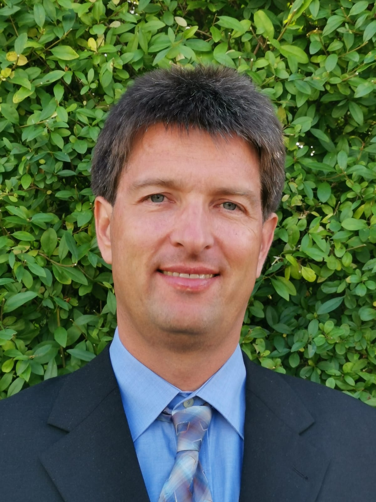

Personal Homepage of Sven Groppe
Contact
 |
Professor Dr. rer. nat. habil. Sven Groppe Professorship of Artificial Intelligence Bernhard-von-Cotta-Straße 2 D-09599 Freiberg Germany EMail: sven.groppe [a*t] informatik.tu-freiberg.de Phone: +49 3731 39-3116 |
Publications (#216)
Number of search results:
2026 (#11)
Ai-supported analysis and classification of digitized botanical collections
Akasha-Leonie Kessel, Sven Groppe, Dominik Röpert, Jinghua Groppe ●
11th International Conference on Machine Learning, Optimization, and Data Science (LOD'25), Tuscany, Italy, https://doi.org/10.1007/978-3-032-21480-5_22
Decoder Dependence in Surface-Code Threshold Estimation with Native Gottesman-Kitaev-Preskill Digitization and Parallelized Sampling
Dennis Delali Kwesi Wayo, Chinonso Onah, Leonardo Goliatt, Sven Groppe
arXiv 2603.25757, https://doi.org/10.48550/ARXIV.2603.25757
Decoder Dependence in Surface‐Code Threshold Estimation Under Digitized Hybrid Continuous‐Variable and Discrete Noise
Dennis Delali Kwesi Wayo, Chinonso Onah, Leonardo Goliatt, Sven Groppe
Fortschritte der Physik 74(6), Wiley, http://dx.doi.org/10.1002/prop.70124
RaCS: Near‐Zero‐Error Classical Data Encoding on Photonic Quantum Processors via Redundancy‐Assisted Coherent‐State Codes
Dennis Delali Kwesi Wayo, Sven Groppe
Fortschritte der Physik 74(4), Wiley, http://dx.doi.org/10.1002/prop.70095
OMNIA: Closing the Loop by Leveraging LLMs for Knowledge Graphs Completion
Frédéric Ieng, Massinissa Hammaz, Soror Sahri, Mourad Ouzzani, Salima Benbernou, Hanieh Khorashadizadeh, Sven Groppe, Farah Benamara
IEEE International Conference on Data Engineering (ICDE), Montreal, Canada
Efficient Batch Search Algorithm for B+ Tree Index Structures with Level-Wise Traversal on FPGAs
Max Tzschoppe, Martin Wilhelm, Sven Groppe, Thilo Pionteck
arXiv 2604.21117, https://doi.org/10.48550/arxiv.2604.21117
Agentic AI, Context Engineering and Knowledge Graphs: Current Approaches, Challenges and Opportunities
Niraj Karki, Manjila Pandey, Sanju Tiwari, Nandana Mihindukulasooriya, Sven Groppe, Daniel Dobriy
QuaLLM-KG 2026, 1st International Workshop on Quality in Large Language Models and Knowledge Graphs, Tampere, Finland, https://ceur-ws.org/Vol-4192/QuaLLM_KG-paper5.pdf
Improved Join Order Optimization for Database Queries using Hybrid Quantum-Classical Approaches for QUBO Problems
Nitin Nayak, Tobias Winker, Umut Çalıkyılmaz, Jinghua Groppe, Sven Groppe
arXiv 2606.16247, https://doi.org/10.48550/arxiv.2606.16247
A Divergent Index Tuning Advisor Using Quantum Machine Learning for Distributed Databases
Sam Bird, Le Gruenwald, Sven Groppe
IEEE 42nd International Conference on Data Engineering Workshops (ICDEW): Joint International Workshop on Big Data Management on Emerging Hardware and Data Management on Virtualized Active Systems (HardBD and Active'26), Montréal, Canada, https://doi.org/10.1109/ICDEW71238.2026.00005
Opportunities and Challenges for Data Quality in the Era of Quantum Computing
Sven Groppe, Valter Uotila, Jinghua Groppe
The third workshop on Quantum Computing and Quantum-Inspired Technology for Data-Intensive Systems and Applications (Q-Data '26) in conjunction with SIGMOD, Bengaluru, India, https://doi.org/10.1145/3811628.3811834
OptiMA: A Transaction-Based Framework with Throughput Optimization for Very Complex Multi-Agent Systems
Umut Çalıkyılmaz, Nitin Nayak, Jinghua Groppe, Sven Groppe
The 14th International Workshop on Engineering Multi-Agent Systems (EMAS 2026) co-located with the 25th International Conference on Autonomous Agents and Multiagent Systems (AAMAS), Paphos, Cyprus, https://emas-workshop.github.io/2026/papers/010_OptiMA_A_Transaction-Based_Framework_with_Schedule_Optimizat.pdf
2025 (#14)
Impact of Chatbots on User Experience and Data Quality on Citizen Science Platforms
Akasha-Leonie Kessel, Soror Sahri, Sven Groppe, Jinghua Groppe, Hanieh Khorashadizadeh, Marc Pignal, Eva Perez Pimparé, Régine Vignes-Lebbe ●
Computers 14(1), https://doi.org/10.3390/computers14010021
GraphTrace: A Modular Retrieval Framework Combining Knowledge Graphs and Large Language Models for Multi-Hop Question Answering
Anna Osipjan, Hanieh Khorashadizadeh, Akasha-Leonie Kessel, Sven Groppe, Jinghua Groppe ●
Computers 14(9), MDPI AG, http://dx.doi.org/10.3390/computers14090382
EcoRAG: A Multi-hop Economic QA Benchmark for Retrieval Augmented Generation Using Knowledge Graphs
Hanieh Khorashadizadeh, Sanju Tiwari, Farah Benamara, Nandana Mihindukulasooriya, Jinghua Groppe, Soror Sahri, Morteza Ezzabady, Frédéric Ieng, Sven Groppe
Natural Language Processing and Information Systems (NLDB), Kanazawa, Japan, http://dx.doi.org/10.1007/978-3-031-97144-0_15
Weather forecasting using quantum-based LSTM: A comparative analysis
Hasnain Sikora, Shridevi Krishnakumar, Sven Groppe ●
Results in Engineering 28, Elsevier BV, http://dx.doi.org/10.1016/j.rineng.2025.107995
Automated Archival Descriptions with Federated Intelligence of LLMs
Jinghua Groppe, Andreas Marquet, Annabel Walz, Sven Groppe
arXiv arXiv:2504.05711, https://doi.org/10.48550/arXiv.2504.05711
Automated Archival Descriptions with Federated Intelligence of LLMs
Jinghua Groppe, Andreas Marquet, Annabel Walz, Sven Groppe
The 36th International Conference on Database and Expert Systems Applications (DEXA), Bangkok, Thailand, https://doi.org/10.1007/978-3-032-02049-9_4
QC4DB: Beschleunigung von relationalen Datenbankmanagementsystemen durch Quantenrechner Teilvorhaben: Datenbank Optimierungen (DBOpt)
Jinghua Groppe, Nitin Nayak, Tobias Winker, Umut Çalıkyılmaz, Sven Groppe
Quantum-Enhanced Transaction Scheduling with Reduced Complexity via Solving QUBO Iteratively using a Locking Mechanism
Nitin Nayak, Alexandru Prisacaru, Umut Çalıkyılmaz, Jinghua Groppe, Sven Groppe ●
2nd International Workshop on Quantum Computing and Quantum-Inspired Technology for Data-Intensive Systems and Applications (Q-Data), Berlin, Germany, https://doi.org/10.1145/3736393.3736701
Proceedings of the International Health Informatics Conference: IHIC 2023
Sarika Jain, Bharat K. Bhargava, Deepshikha Kalra, Sven Groppe (Editors)
Springer Nature Singapore, http://dx.doi.org/10.1007/978-981-97-7190-5
A scientometric analysis of reviews on the Internet of Things
Sarika Jain, Priyanka Sukul, Jinghua Groppe, Benjamin Warnke, Pooja Harde, Ritik Jangid, Waqas Rehan, Yuri Cotrado, Stefan Fischer, Sven Groppe ●
The Journal of Supercomputing 81(6), Springer Science and Business Media LLC, http://dx.doi.org/10.1007/s11227-025-07230-w
Opportunities and Challenges for Data Quality in the Era of Quantum Computing
Sven Groppe, Valter Uotila, Jinghua Groppe
arXiv 2512.00870, https://doi.org/10.48550/arxiv.2512.00870
QCardEst/QCardCorr: Quantum Cardinality Estimation and Correction
Tobias Winker, Jinghua Groppe, Sven Groppe
arXiv 2509.08817, http://dx.doi.org/10.48550/ARXIV.2509.08817
OptiMA: A Transaction-Based Framework with Throughput Optimization for Very Complex Multi-Agent Systems
Umut Çalıkyılmaz, Nitin Nayak, Jinghua Groppe, Sven Groppe
arXiv 2511.03761, https://doi.org/10.48550/arxiv.2511.03761
Utilizing Quantum Computing to Improve the Quality of Data
Valter Uotila, Soror Sahri, Sven Groppe
The 29th European Conference on Advances in Databases and Information Systems (ADBIS), Tampere, Finland, https://doi.org/10.1007/978-3-032-05281-0_19
2024 (#23)
ReJOOSp: Reinforcement Learning for Join Order Optimization in SPARQL
Benjamin Warnke, Kevin Martens, Tobias Winker, Sven Groppe, Jinghua Groppe, Prasad Adhiyaman, Sruthi Srinivasan, Shridevi Krishnakumar
Big Data and Cognitive Computing (BDCC) 8(7), https://doi.org/10.3390/bdcc8070071
Exploring the Determinants of Semantic Internet of Things in Healthcare
Fatima Zahra Amara, Sven Groppe, Sanju Tiwari, Mounir Hemam, Meriem Djezzar
In Roles and Challenges of Semantic Intelligence in Healthcare Cognitive Computing, IOS Press, http://dx.doi.org/10.3233/SSW230026
Research Trends for the Interplay between Large Language Models and Knowledge Graphs
Hanieh Khorashadizadeh, Fatima Zahra Amara, Morteza Ezzabady, Frédéric Ieng, Sanju Tiwari, Nandana Mihindukulasooriya, Jinghua Groppe, Soror Sahri, Farah Benamara, Sven Groppe
VLDB 2024 Workshop: The International Workshop on Data Management Opportunities in Unifying Large Language Models + Knowledge Graphs (LLM+KG), Guangzhou, China, https://vldb.org/workshops/2024/proceedings/LLM+KG/LLM+KG-9.pdf
Research Trends for the Interplay between Large Language Models and Knowledge Graphs
Hanieh Khorashadizadeh, Fatima Zahra Amara, Morteza Ezzabady, Frédéric Ieng, Sanju Tiwari, Nandana Mihindukulasooriya, Jinghua Groppe, Soror Sahri, Farah Benamara, Sven Groppe
arXiv preprint arXiv:2406.08223, https://doi.org/10.48550/arxiv.2406.08223
Assessing the Impact of Government Policies on Covid-19 Spread: A Machine Learning Approach
Hanieh Khorashadizadeh, Jinghua Groppe, Jessica Lückert, Sanju Tiwari, Sven Groppe
10th International Conference on Machine Learning, Optimization, and Data Science (LOD), Tuscany, Italy, https://doi.org/10.1007/978-3-031-82481-4_3
Construction and Canonicalization of Economic Knowledge Graphs with LLMs
Hanieh Khorashadizadeh, Nandana Mihindukulasooriya, Nilufar Ranji, Morteza Ezzabady, Frédéric Ieng, Jinghua Groppe, Farah Benamara, Sven Groppe ●
International Knowledge Graph and Semantic Web Conference (KGSWC), http://dx.doi.org/10.1007/978-3-031-81221-7_23
There Are Infinite Ways to Formulate Code: How to Mitigate the Resulting Problems for Better Software Vulnerability Detection
Jinghua Groppe, Sven Groppe, Daniel Senf, Ralf Möller
Information 15(4), https://doi.org/10.3390/info15040216
Applied Machine Learning and Data Analytics: 6th International Conference, AMLDA 2023, Lübeck, Germany, November 9–10, 2023, Revised Selected Papers
M. A. Jabbar, Sanju Tiwari, Fernando Ortiz-Rodríguez, Sven Groppe, Tasneem Bano Rehman (Editors)
Springer Nature Switzerland, http://dx.doi.org/10.1007/978-3-031-55486-5
Hype or Heuristic? Quantum Reinforcement Learning for Join Order Optimisation
Maja Franz, Tobias Winker, Sven Groppe, Wolfgang Mauerer
2024 IEEE International Conference on Quantum Computing and Engineering (QCE), https://doi.org/10.1109/QCE60285.2024.00055
Hype or Heuristic? Quantum Reinforcement Learning for Join Order Optimisation
Maja Franz, Tobias Winker, Sven Groppe, Wolfgang Mauerer
arXiv 2405.07770, https://doi.org/10.48550/arXiv.2405.07770
Supervised Learning on Relational Databases with Quantum Graph Neural Networks
Martin Vogrin, Rok Vogrin, Sven Groppe, Jinghua Groppe
VLDB 2024 Workshop: The Second International Workshop on Quantum Data Science and Management (QDSM’24), Guangzhou, China, https://vldb.org/workshops/2024/proceedings/QDSM/QDSM.5.pdf
Towards Generating High-Quality Knowledge Graphs by Leveraging Large Language Models
Morteza Ezzabady, Frédéric Ieng, Hanieh Khorashadizadeh, Farah Benamara, Sven Groppe, Soror Sahri
The 29th Annual International Conference on Natural Language & Information Systems (NLDB 2024), Turin, Italy, https://doi.org/10.1007/978-3-031-70239-6_31
QCE'24 Tutorial: Quantum Annealing - Emerging Exploration for Database Optimization
Nitin Nayak, Manuel Schönberger, Valter Uotila, Zhengtong Yan, Sven Groppe, Jiaheng Lu, Wolfgang Mauerer
arXiv arXiv:2411.04638, https://arxiv.org/abs/2411.04638
Quantum Annealing: Emerging Exploration for Database Optimization
Nitin Nayak, Manuel Schönberger, Valter Uotila, Zhengtong Yan, Sven Groppe, Jiaheng Lu, Wolfgang Mauerer
IEEE International Conference on Quantum Computing and Engineering (QCE), Montréal, Québec, Canada
Quantum Join Ordering by Splitting the Search Space of QUBO Problems
Nitin Nayak, Tobias Winker, Umut Çalıkyılmaz, Sven Groppe, Jinghua Groppe
Datenbank-Spektrum 24(1): 21-32, https://doi.org/10.1007/s13222-024-00468-3
moduli: A Disaggregated Data Management Architecture for Data-Intensive Workflows
Paolo Ceravolo, Tiziana Catarci, Marco Console, Philippe Cudré-Mauroux, Sven Groppe, Katja Hose, Jaroslav Pokorný, Oscar Romero, Robert Wrembel
SIGWEB Newsl. 2024(Winter), Association for Computing Machinery, https://doi.org/10.1145/3643603.3643607
On the Potential of Sustainable Software Solutions in Smart Manufacturing Environments
Simon Paasche, Sven Groppe
In Semantic Intelligence, Springer Nature Singapore, http://dx.doi.org/10.1007/978-981-97-7356-5_3
The Way Forward with AI-Complete Problems
Sven Groppe, Sarika Jain
New Generation Computing , https://doi.org/10.1007/s00354-024-00251-8
Are Large Language Models the New Interface for Data Pipelines?
Sylvio Barbon Junior, Paolo Ceravolo, Sven Groppe, Mustafa Jarrar, Samira Maghool, Florence Sèdes, Soror Sahri, Maurice Van Keulen
arXiv preprint arXiv:2406.06596, https://doi.org/10.48550/arxiv.2406.06596
Are Large Language Models the New Interface for Data Pipelines?
Sylvio Barbon Junior, Paolo Ceravolo, Sven Groppe, Mustafa Jarrar, Samira Maghool, Florence Sèdes, Soror Sahri, Maurice Van Keulen
Proceedings of the International Workshop on Big Data in Emergent Distributed Environments, Santiago, Chile, https://doi.org/10.1145/3663741.3664785
Video Shot-boundary detection: Issues, challenges and solutions
T. Kar, P. Kanungo, Sachi Nandan Mohanty, Sven Groppe, Jinghua Groppe
Artificial Intelligence Review 57(4), https://doi.org/10.1007/s10462-024-10742-1
Workshop Summary of the Second International Workshop on Quantum Data Science and Management (QDSM)
Valter Uotila, Sven Groppe, Le Gruenwald, Jiaheng Lu, Wolfgang Mauerer
VLDB 2024 Workshop: The Second International Workshop on Quantum Data Science and Management (QDSM’24), https://vldb.org/workshops/2024/proceedings/QDSM/QDSM.1.pdf
Developers’ Perspective on Trustworthiness of Code Generated by ChatGPT: Insights from Interviews
Zeinab Sadat Rabani, Hanieh Khorashadizadeh, Shirin Abdollahzade, Sven Groppe, Javad Ghofrani
Applied Machine Learning and Data Analytics (AMLDA 2023), Lübeck, Germany, http://dx.doi.org/10.1007/978-3-031-55486-5_16
2023 (#22)
Distributed SPARQL Queries in Collaboration with the Routing Protocol
Benjamin Warnke, Stefan Fischer, Sven Groppe
Proceedings of the 27th International Database Engineered Applications Symposium (IDEAS), Heraklion, Crete, Greece, https://doi.org/10.1145/3589462.3589497
Using Machine Learning and Routing Protocols for Optimizing Distributed SPARQL Queries in Collaboration
Benjamin Warnke, Stefan Fischer, Sven Groppe
Computers 12(10), https://doi.org/10.3390/computers12100210
Evaluation approaches of personal knowledge graphs
Hanieh Khorashadizadeh, Frédéric Ieng, Morteza Ezzabady, Soror Sahri, Sven Groppe, Farah Benamara
In Personal Knowledge Graphs (PKGs): Methodology, tools and applications, Institution of Engineering and Technology, https://doi.org/10.1049/pbpc063e_ch12
Exploring In-Context Learning Capabilities of Foundation Models for Generating Knowledge Graphs from Text
Hanieh Khorashadizadeh, Nandana Mihindukulasooriya, Sanju Tiwari, Jinghua Groppe, Sven Groppe
Proceedings of the 2nd International Workshop on Knowledge Graph Generation From Text (Text2KG) in conjunction with the Extended Semantic Web Conference (ESWC 2023), Hersonissos, Greece, https://ceur-ws.org/Vol-3447/Text2KG_Paper_9.pdf
Exploring In-Context Learning Capabilities of Foundation Models for Generating Knowledge Graphs from Text
Hanieh Khorashadizadeh, Nandana Mihindukulasooriya, Sanju Tiwari, Jinghua Groppe, Sven Groppe
CoRR abs/2305.08804, https://doi.org/10.48550/arXiv.2305.08804
Variables are a Curse in Software Vulnerability Prediction
Jinghua Groppe, Sven Groppe, Ralf Möller
The 34th International Conference on Database and Expert Systems Applications (DEXA), Panang, Malaysia, https://doi.org/10.1007/978-3-031-39847-6_41
Index Tuning with Machine Learning on Quantum Computers for Large-Scale Database Applications
Le Gruenwald, Tobias Winker, Umut Çalıkyılmaz, Jinghua Groppe, Sven Groppe
Joint Proceedings of Workshops at the 49th International Conference on Very Large Data Bases (VLDB 2023) - International Workshop on Quantum Data Science and Management (QDSM'23), Vancouver, Canada, https://ceur-ws.org/Vol-3462/QDSM5.pdf
Constructing Optimal Bushy Join Trees by Solving QUBO Problems on Quantum Hardware and Simulators
Nitin Nayak, Jan Rehfeld, Tobias Winker, Benjamin Warnke, Umut Çalıkyılmaz, Sven Groppe ●
Proceedings of the International Workshop on Big Data in Emergent Distributed Environments (BiDEDE), Seattle, WA, USA, https://doi.org/10.1145/3579142.3594298
Joint Proceedings of Workshops at the 49th International Conference on Very Large Data Bases (VLDB 2023), Vancouver, Canada
Rajesh Bordawekar, Cinzia Cappiello, Vasilis Efthymiou, Lisa Ehrlinger, Vijay Gadepally, Sainyam Galhotra, Sandra Geisler, Sven Groppe, Le Gruenwald, Alon Y. Halevy, Hazar Harmouch, Oktie Hassanzadeh, Ihab F. Ilyas, Ernesto Jiménez-Ruiz, Sanjay Krishnan, Tirthankar Lahiri, Guoliang Li, Jiaheng Lu, Wolfgang Mauerer, Umar Farooq Minhas, Felix Naumann, M. Tamer Özsu, El Kindi Rezig, Kavitha Srinivas, Michael Stonebraker, Satyanarayana R. Valluri, Maria-Esther Vidal, Haixun Wang, Jiannan Wang, Yingjun Wu, Xun Xue, Mohamed Zaït, Kai Zeng (Editors)
CEUR-WS.org, https://ceur-ws.org/Vol-3462
Semantic Intelligence
Sarika Jain, Sven Groppe, Bharat K. Bhargava (Editors)
Springer Nature Singapore, https://doi.org/10.1007/978-981-19-7126-6
Proceedings of the International Health Informatics Conference (IHIC) 2022
Sarika Jain, Sven Groppe, Nandana Mihindukulasooriya (Editors)
Springer Nature Singapore, https://doi.org/10.1007/978-981-19-9090-8
A Finite State Automaton for Green Data Validation in a Real-World Smart Manufacturing Environment with Special Regard to Time-Outs and Overtaking
Simon Paasche, Sven Groppe
Future Internet 15(11), https://doi.org/10.3390/fi15110349
GreenCC: A Hybrid Approach to Sustainably Validate Manufacturing Data in Industry 4.0 Environments
Simon Paasche, Sven Groppe
Proceedings of the 12th International Conference on Data Science, Technology and Applications (DATA), Rome, Italy, https://doi.org/10.5220/0012147900003541
Poster: Handling Inconsistent Data in Industry 4.0
Simon Paasche, Sven Groppe
Proceedings of the 17th ACM International Conference on Distributed and Event-Based Systems (DEBS'23), Neuchatel, Switzerland, https://doi.org/10.1145/3583678.3603281
Renewal of the Major Fields of New-Generation Computing
Sven Groppe
New Gener. Comput. : 1 - 2, https://doi.org/10.1007/s00354-023-00206-5
Proceedings of the International Workshop on Big Data in Emergent
Distributed Environments, BiDEDE 2023, Seattle, WA, USA
Sven Groppe, Le Gruenwald, Ching-Hsien Hsu (Editors)
Third International Workshop on Big Data in Emergent Distributed Environments (BiDEDE)
Sven Groppe, Le Gruenwald, Ching-Hsien Hsu
Companion of the 2023 International Conference on Management of Data (SIGMOD), Seattle, WA, USA, https://doi.org/10.1145/3555041.3590821
Hybrid CPU/GPU/APU accelerated query, insert, update and erase operations in hash tables with string keys
Tobias Groth, Sven Groppe, Thilo Pionteck, Franz Valdiek, Martin Koppehel
Knowledge and Information Systems 65(10): 4359--4377, Springer Science and Business Media LLC, https://doi.org/10.1007/s10115-023-01891-w
Quantum Machine Learning: Foundation, New Techniques, and Opportunities for Database Research
Tobias Winker, Sven Groppe, Valter Uotila, Zhengtong Yan, Jiaheng Lu, Maja Franz, Wolfgang Mauerer
Proceedings of ACM SIGMOD/PODS International Conference on Management of Data (SIGMOD), https://doi.org/10.1145/3555041.3589404
Quantum Machine Learning for Join Order Optimization using Variational Quantum Circuits
Tobias Winker, Umut Çalıkyılmaz, Le Gruenwald, Sven Groppe
Proceedings of the International Workshop on Big Data in Emergent Distributed Environments (BiDEDE), Seattle, WA, USA, https://doi.org/10.1145/3579142.3594299
Opportunities for Quantum Acceleration of Databases: Optimization of Queries and Transaction Schedules
Umut Çalıkyılmaz, Sven Groppe, Jinghua Groppe, Tobias Winker, Stefan Prestel, Farida Shagieva, Daanish Arya, Florian Preis, Le Gruenwald
Proc. VLDB Endow. 16(9): 2344--2353, https://doi.org/10.14778/3598581.3598603
Preface QDSM
Valter Uotila, Sven Groppe, Le Gruenwald, Jiaheng Lu, Wolfgang Mauerer
Joint Proceedings of Workshops at the 49th International Conference on Very Large Data Bases (VLDB 2023) - International Workshop on Quantum Data Science and Management (QDSM'23), Vancouver, Canada, https://ceur-ws.org/Vol-3462/QDSM1.pdf
2022 (#16)
A SPARQL Benchmark for Distributed Databases in IoT Environments
Benjamin Warnke, Johann Mantler, Sven Groppe, Yuri Cotrado Sehgelmeble, Stefan Fischer ●
Big Data in Emergent Distributed Environments (BiDEDE'22), Philadelphia, PA, USA, https://doi.org/10.1145/3530050.3532929
SIMORA: SIMulating Open Routing protocols for Application interoperability on edge devices
Benjamin Warnke, Yuri Cotrado Sehgelmeble, Johann Mantler, Sven Groppe, Stefan Fischer ●
6th IEEE International Conference on Fog and Edge Computing (ICFEC22), Taormina (Messina), Italy, https://doi.org/10.1109/ICFEC54809.2022.00013
Artificial Intelligence in Global Epidemics, Part 2
Gurdeep Singh Hura, Sven Groppe, Sarika Jain, Le Gruenwald
New Generation Computing (NGCO) 40(4), Springer Science and Business Media LLC, https://doi.org/10.1007/s00354-022-00196-w
A Survey on Covid-19 Knowledge Graphs and their Data Sources
Hanieh Khorashadizadeh, Sanju Tiwari, Sven Groppe
Proceedings of the EAI International Conference on Intelligent Systems and Machine Learning (EAI ICISML 2022), https://doi.org/10.1007/978-3-031-35078-8_13
Deep Learning-Based Classification of Customer Communications of a German Utility Company
Jinghua Groppe, Rene Schlichting, Sven Groppe, Ralf Möller
International Semantic Intelligence Conference (ISIC 2022), online, https://doi.org/10.1007/978-981-19-7126-6_16
Silq2Qiskit - Developing a quantum language source-to-source translator
Julian Hans, Sven Groppe ●
Proceedings of the 5th International Conference on Computer Science and Software Engineering (CSSE 2022), https://doi.org/10.1145/3569966.3570114
Proceedings of the Workshop on Advances in Computational Intelligence, its Concepts & Applications (ACI 2022) co-located with International Semantic Intelligence Conference (ISIC 2022), Georgia Southern University, Savannah, United States
Sarika Jain, Sven Groppe, Nandana Mihindukulasooriya (Editors)
CEUR-WS.org, http://ceur-ws.org/Vol-3283
Enhancing Data Quality and Process Optimization for Smart Manufacturing Lines in Industry 4.0 Scenarios
Simon Paasche, Sven Groppe
Proceedings of The International Workshop on Big Data in Emergent Distributed Environments (BiDEDE'22), https://doi.org/10.1145/3530050.3532928
Generating SPARQL-Constraints for Consistency Checking in Industry 4.0 Scenarios
Simon Paasche, Sven Groppe
Open Journal of Internet Of Things (OJIOT) 8(1): 80--90, RonPub, https://nbn-resolving.org/urn:nbn:de:101:1-2022090515504409042979
The role of Semantic Hybrid Multi-Model Multi-Platform (SHM3P) Databases for IoT
Sven Groppe, Jinghua Groppe, Tobias Groth
In Shikha Mehta, Sanju Tiwari, Patrick Siarry, M.A Jabbar, Tools, Languages, Methodologies for Representing Semantics on the Web of Things, ISTE SCIENCE PUBLISHING Ltd, https://www.oreilly.com/library/view/tools-languages-methodologies/9781786307644/c01.xhtml
Quantum Data Management and Quantum Machine Learning for Data Management: State-of-the-Art and Open Challenges
Sven Groppe, Jinghua Groppe, Umut Çalıkyılmaz, Tobias Winker, Le Gruenwald
Proceedings of the EAI International Conference on Intelligent Systems and Machine Learning (EAI ICISML 2022), https://doi.org/10.1007/978-3-031-35081-8_20
BiDEDE '22: Proceedings of the International Workshop on Big Data in Emergent Distributed Environments
Sven Groppe, Le Gruenwald, Ching-Hsien Hsu (Editors)
Association for Computing Machinery (ACM), https://dl.acm.org/doi/proceedings/10.1145/3530050
BiDEDE'22: Second International Workshop on Big Data in Emergent Distributed Environments
Sven Groppe, Le Gruenwald, Ching-Hsien Hsu
Proceedings of the 2022 International Conference on Management of Data (SIGMOD), https://doi.org/10.1145/3514221.3524072
Short Analysis of the Impact of COVID-19 Ontologies
Sven Groppe, Sanju Tiwari, Hanieh Khorashadizadeh, Jinghua Groppe, Tobias Groth, Farah Benamara, Soror Sahri
International Semantic Intelligence Conference (ISIC 2022), online, https://doi.org/10.1007/978-981-19-7126-6_17
Contributions to the 6th Workshop on Very Large Internet of Things (VLIoT 2022)
Sven Groppe, Sanju Tiwari, Shui Yu
Open Journal of Internet Of Things (OJIOT) 8(1): 1--6, RonPub, https://nbn-resolving.org/urn:nbn:de:101:1-2022090515500516853039
Accelerated Parallel Hybrid GPU/CPU Hash Table Queries with String Keys
Tobias Groth, Sven Groppe, Thilo Pionteck, Martin Koppehel, Franz Valdiek
The 33rd International Conference on Database and Expert Systems Applications (DEXA), Vienna, Austria, This paper received the 'Norman Revell Best Paper Award', https://doi.org/10.1007/978-3-031-12426-6_15
2021 (#14)
Flexible data partitioning schemes for parallel merge joins in semantic web queries
Benjamin Warnke, Muhammad Waqas Rehan, Stefan Fischer, Sven Groppe
Datenbanksysteme für Business, Technologie und Web (BTW), 19. Fachtagung des GI-Fachbereichs "Datenbanken und Informationssysteme", Dresden, Germany, this publication received the label 'Results Reproduced', https://doi.org/10.18420/btw2021-12
Artificial Intelligence in Global Epidemics, Part 1
Gurdeep Singh Hura, Sven Groppe, Sarika Jain, Le Gruenwald
New Generation Computing 39(3-4), https://doi.org/10.1007/s00354-021-00138-y
Leveraging Artificial Intelligence in Global Epidemics
Le Gruenwald, Sarika Jain, Sven Groppe (Editors)
CuART - a CUDA-Based, Scalable Radix-Tree Lookup and Update Engine
Martin Koppehel, Tobias Groth, Sven Groppe, Thilo Pionteck
50th International Conference on Parallel Processing (ICPP 2021), Lemont, IL, USA, https://doi.org/10.1145/3472456.3472511
A Platform for Interactive Data Science with Apache Spark for On-premises Infrastructure
Rafal Lokuciejewski, Dominik Schüssele, Florian Wilhelm, Sven Groppe ●
Proceedings of the 11th International Conference on Cloud Computing and Services Science (CLOSER), https://doi.org/10.5220/0010447500650076
Proceedings of the International Semantic Intelligence Conference (ISIC), New Delhi (hybrid), India
Sarika Jain, Sven Groppe (Editors)
Semantic Hybrid Multi-Model Multi-Platform (SHM3P) Databases
Sven Groppe
International Semantic Intelligence Conference (ISIC 2021), New Delhi (hybrid), India, http://ceur-ws.org/Vol-2786/Paper2.pdf
Optimizing Transaction Schedules on Universal Quantum Computers via Code Generation for Grover’s Search Algorithm
Sven Groppe, Jinghua Groppe
Proceedings of the 25th International Database Engineering & Applications Symposium (IDEAS), Montreal, QC, Canada, https://doi.org/10.1145/3472163.3472164
BiDEDE '21: Proceedings of the International Workshop on Big Data in Emergent Distributed Environments
Sven Groppe, Le Gruenwald, Ching-Hsien Hsu (Editors)
Association for Computing Machinery (ACM), https://dl.acm.org/doi/proceedings/10.1145/3460866
Automatically Generating Citation Graphs (and Variants) for Systematic Reviews
Sven Groppe, Lina Hartung ●
Open Journal of Information Systems (OJIS) 8(1): 1--25, RonPub, https://nbn-resolving.org/urn:nbn:de:101:1-2021050919330457300473
Generating Sound from the Processing in Semantic Web Databases
Sven Groppe, Rico Klinckenberg, Benjamin Warnke ●
Open Journal of Semantic Web (OJSW) 8(1): 1--27, https://nbn-resolving.org/urn:nbn:de:101:1-2022011618330544843704
Sound of Databases: Sonification of a Semantic Web Database Engine
Sven Groppe, Rico Klinckenberg, Benjamin Warnke ●
Proc. VLDB Endow. 14(12): 2695--2698, https://doi.org/10.14778/3476311.3476322
Overview of the 2021 Edition of the Workshop on Very Large Internet of Things (VLIoT 2021)
Sven Groppe, Weizhi Meng
Open Journal of Internet Of Things (OJIOT) 7(1): 18--22, RonPub, https://nbn-resolving.org/urn:nbn:de:101:1-2021082919330413733202
Special issue on the technologies and applications of big data
Venkataraman Neelanarayanan, Vijayakumar Varadarajan, Ron Doyle, Imad Fakhri Taha Alyaseen, Sven Groppe
Wireless Networks 27(8): 5425-5428, https://doi.org/10.1007/s11276-021-02796-8
2020 (#9)
Hardware-aided update acceleration in a hybrid Semantic Web database system
Dennis Heinrich, Stefan Werner, Christopher Blochwitz, Thilo Pionteck, Sven Groppe
The Journal of Supercomputing 76(10): 7961--7984, https://doi.org/10.1007/s11227-018-2462-y
Emergent models, frameworks, and hardware technologies for Big data analytics
Sven Groppe
The Journal of Supercomputing 76(3): 1800-1827, https://doi.org/10.1007/s11227-018-2277-x
Hybrid Multi-Model Multi-Platform (HM3P) Databases
Sven Groppe, Jinghua Groppe
Proceedings of the 9th International Conference on Data Science, Technology and Applications (DATA), virtual due to Covid-19 pandemic, https://doi.org/10.5220/0009802401770184
Proceedings of the International Workshop on Semantic Big Data (SBD) in conjunction with SIGMOD, Portland, Oregon, USA
Sven Groppe, Le Gruenwald, Valentina Presutti (Editors)
ReViz: A Tool for Automatically Generating Citation Graphs and Variants
Sven Groppe, Lina Hartung ●
International Conference on Asian Digital Libraries (ICADL): Digital Libraries at Times of Massive Societal Transition, online, https://doi.org/10.1007/978-3-030-64452-9_10
Due to COVID-19 the World's Activities Stopped, but not Research: Workshop on Very Large Internet of Things (VLIoT 2020)
Sven Groppe, Mu-Chun Su
Open Journal of Internet Of Things (OJIOT) 6(1): 1--5, https://nbn-resolving.org/urn:nbn:de:101:1-2020080219331432369272
Avoiding Blocking by Scheduling Transactions Using Quantum Annealing
Tim Bittner, Sven Groppe ●
Proceedings of the 24th Symposium on International Database Engineering & Applications (IDEAS), Seoul, Republic of Korea (virtual due to Covid-19 pandemic), https://doi.org/10.1145/3410566.3410593
Hardware Accelerating the Optimization of Transaction Schedules via Quantum Annealing by Avoiding Blocking
Tim Bittner, Sven Groppe ●
Open Journal of Cloud Computing (OJCC) 7(1): 1--21, http://nbn-resolving.de/urn:nbn:de:101:1-2020112218332015343957
Parallelizing Approximate Search on Adaptive Radix Trees
Tobias Groth, Sven Groppe, Martin Koppehel, Thilo Pionteck
Proceedings of the 28th Italian Symposium on Advanced Database Systems, Villasimius, Sud Sardegna, Italy (virtual due to Covid-19 pandemic), http://ceur-ws.org/Vol-2646/16-paper.pdf
2019 (#7)
Editorial of the 2019 Workshop on Very Large Internet of Things (VLIoT)
Markus Endler, Sven Groppe
OJIOT 5(1): 1--5, http://nbn-resolving.de/urn:nbn:de:101:1-2019092919330960165487
Multi-Game Code-Duel for Learning Programming Languages
Sven Groppe, Ian Pösse ●
Open Journal of Information Systems (OJIS) 6(1): 1--23, RonPub, https://nbn-resolving.org/urn:nbn:de:101:1-2020011918334950197619
Proceedings of the International Workshop on Semantic Big Data (SBD) in conjunction with SIGMOD, Amsterdam, The Netherlands
Sven Groppe, Le Gruenwald (Editors)
SBD'19: Fourth Edition of the International Workshop on Semantic Big Data
Sven Groppe, Le Gruenwald
Proceedings of the 2019 International Conference on Management of Data (SIGMOD), http://doi.acm.org/10.1145/3299869.3323670
Code Generation for Big Data Processing in the Web using WebAssembly
Sven Groppe, Niklas Reimer ●
Open Journal of Cloud Computing (OJCC) 6(1): 1--15, RonPub, https://nbn-resolving.org/urn:nbn:de:101:1-2020011918330924188531
Editorial: Mobile Networks in the Era of Big Data
Vijayakumar Varadarajan, Venkataraman Neelanarayanan, Ron Doyle, Imad Fakhri Al-Shaikhli, Sven Groppe
Mobile Networks and Applications 24(4): 1135–-1138, https://doi.org/10.1007/s11036-019-01314-7
Emerging Solutions in Big Data and Cloud Technologies for Mobile Networks
Vijayakumar Varadarajan, Venkataraman Neelanarayanan, Ron Doyle, Imad Fakhri Al-Shaikhli, Sven Groppe
Mobile Networks and Applications 24(3): 1015--1017, https://doi.org/10.1007/s11036-019-01229-3
2018 (#6)
Hardware-Accelerated Index Construction for Semantic Web
Christopher Blochwitz, Julian Wolff, Mladen Berekovic, Dennis Heinrich, Sven Groppe, Jan Moritz Joseph, Thilo Pionteck
International Conference on Field-Programmable Technology (FPT), Naha, Okinawa, Japan, https://doi.org/10.1109/FPT.2018.00053
Webpage Ranking Analysis of Various Search Engines with Special Focus on Country-Specific Search
Sinan Babayigit, Sven Groppe ●
OJWT 5(1): 44--64, http://nbn-resolving.de/urn:nbn:de:101:1-2018093019303617104000
Editorial of the Workshop on Very Large Internet of Things (VLIoT 2018)
Sven Groppe, Carlo Alberto Boano
OJIOT 4(1): 1--6, http://nbn-resolving.de/urn:nbn:de:101:1-2018080519324071729480
The First International Workshop on Web Data Processing and Reasoning (WDPAR 2018)
Sven Groppe, Christophe Cruz
OJWT 5(1): 1--5, https://nbn-resolving.org/urn:nbn:de:101:1-2018110508370722588082
Anonymous Shopping in the Internet by Separation of Data
Sven Groppe, Felix Kuhr, Mehmet Atilla Coskun
OJWT 5(1): 14--22, http://nbn-resolving.de/urn:nbn:de:101:1-2018093019301629565937
Proceedings of the International Workshop on Semantic Big Data, SBD@SIGMOD 2018, Houston, TX, USA
Sven Groppe, Le Gruenwald (Editors)
2017 (#7)
Search & Update Optimization of a B+ Tree in a Hardware aided Semantic Web Database System
Dennis Heinrich, Stefan Werner, Christopher Blochwitz, Thilo Pionteck, Sven Groppe
Proceedings of the 7th International Conference on Emerging Databases (EDB), Busan, Korea, Runner-Up Paper Award, https://doi.org/10.1007/978-981-10-6520-0_18
The mf-index: A Citation-Based Multiple Factor Index to Evaluate and Compare the Output of Scientists
Eric Oberesch, Sven Groppe ●
OJWT 4(1): 1--32, http://nbn-resolving.de/urn:nbn:de:101:1-2017070914565
Purposeful Searching for Citations of Scholarly Publications
Fabian Rosenthal, Sven Groppe ●
OJIS 4(1): 27--48, http://nbn-resolving.de/urn:nbn:de:101:1-201711266882
Open-Source Knowledgemanagement Platform zur Unterstützung der Lehre in der Medizin
Moritz Welberg, Claus Schuster, Sven Groppe ●
Gemeinsame Jahrestagung der Gesellschaft für Medizinische Ausbildung (GMA) und des Arbeitskreises zur Weiterentwicklung der Lehre in der Zahnmedizin (AKWLZ), Münster, Germany, https://dx.doi.org/10.3205/17gma232
Semi-static operator graphs for accelerated query execution on FPGAs
Stefan Werner, Dennis Heinrich, Thilo Pionteck, Sven Groppe
Microprocessors and Microsystems - Embedded Hardware Design 53: 178--189, https://doi.org/10.1016/j.micpro.2017.07.010
First Edition of the Very Large Internet of Things Workshop (VLIoT)
Sven Groppe, Carlo Alberto Boano
OJIOT 3(1): 12--17, http://nbn-resolving.de/urn:nbn:de:101:1-2017080613397
Proceedings of The International Workshop on Semantic Big Data, SBD@SIGMOD 2017, Chicago, IL, USA
Sven Groppe, Le Gruenwald (Editors)
2016 (#4)
Accelerated join evaluation in Semantic Web databases by using FPGAs
Stefan Werner, Dennis Heinrich, Marc Stelzner, Volker Linnemann, Thilo Pionteck, Sven Groppe
Concurrency and Computation: Practice and Experience 28(7): 2031--2051, https://doi.org/10.1002/cpe.3502
Runtime Adaptive Hybrid Query Engine based on FPGAs
Stefan Werner, Dennis Heinrich, Sven Groppe, Christopher Blochwitz, Thilo Pionteck
OJDB 3(1): 21--41, http://nbn-resolving.de/urn:nbn:de:101:1-201705194645
Constructing Large-Scale Semantic Web Indices for the Six RDF Collation
Orders
Sven Groppe, Dennis Heinrich, Christopher Blochwitz, Thilo Pionteck
OJBD 2(1): 11--25, http://nbn-resolving.de/urn:nbn:de:101:1-201705194418
Proceedings of the International Workshop on Semantic Big Data, San Francisco, CA, USA
Sven Groppe, Le Gruenwald (Editors)
2015 (#9)
An optimized radix-tree for hardware-accelerated dictionary generation for semantic web databases
Christopher Blochwitz, Jan Moritz Joseph, Rico Backasch, Thilo Pionteck, Stefan Werner, Dennis Heinrich, Sven Groppe
International Conference on ReConFigurable Computing and FPGAs (ReConFig), Riviera Maya, Mexico, https://doi.org/10.1109/ReConFig.2015.7393291
Hybrid FPGA approach for a B+ tree in a Semantic Web database system
Dennis Heinrich, Stefan Werner, Marc Stelzner, Christopher Blochwitz, Thilo Pionteck, Sven Groppe
10th International Symposium on Reconfigurable Communication-centric Systems-on-Chip (ReCoSoC), Bremen, Germany, https://doi.org/10.1109/ReCoSoC.2015.7238093
An architectural template for composing application specific datapaths at runtime
Rico Backasch, Gerald Hempel, Christopher Blochwitz, Stefan Werner, Sven Groppe, Thilo Pionteck
International Conference on ReConFigurable Computing and FPGAs (ReConFig), Riviera Maya, Mexico, https://doi.org/10.1109/ReConFig.2015.7393300
Automated composition and execution of hardware-accelerated operator graphs
Stefan Werner, Dennis Heinrich, Jannik Piper, Sven Groppe, Rico Backasch, Christopher Blochwitz, Thilo Pionteck ●
10th International Symposium on Reconfigurable Communication-centric Systems-on-Chip (ReCoSoC), Bremen, Germany, https://doi.org/10.1109/ReCoSoC.2015.7238078
Distributed Join Approaches for W3C-Conform SPARQL Endpoints
Sven Groppe, Dennis Heinrich, Stefan Werner
OJSW 2(1): 30--52, http://nbn-resolving.de/urn:nbn:de:101:1-201705194910
PatTrieSort - External String Sorting based on Patricia Tries
Sven Groppe, Dennis Heinrich, Stefan Werner, Christopher Blochwitz, Thilo Pionteck
OJDB 2(1): 36--50, http://nbn-resolving.de/urn:nbn:de:101:1-201705194627
Advances in Cloud and Ubiquitous Computing
Sven Groppe, K. Chandrasekaran
OJCC 2(2): 1--3, http://nbn-resolving.de/urn:nbn:de:101:1-201704229173
Semantic and Web: The Semantic Part
Sven Groppe, Paulo Rupino da Cunha
OJSW 2(1): 1--3, http://nbn-resolving.de/urn:nbn:de:101:1-201705194864
Semantic and Web: The Web Part
Sven Groppe, Paulo Rupino da Cunha
OJWT 2(1): 1--3, http://nbn-resolving.de/urn:nbn:de:101:1-201705194864
2014 (#5)
Getting Indexed by Bibliographic Databases in the Area of Computer Science
Arne Kusserow, Sven Groppe ●
OJWT 1(2): 10--27, http://nbn-resolving.de/urn:nbn:de:101:1-201705291343
Identifying homogenous reconfigurable regions in heterogeneous FPGAs for module relocation
Rico Backasch, Gerald Hempel, Stefan Werner, Sven Groppe, Thilo Pionteck
International Conference on ReConFigurable Computing and FPGAs (ReConFig), Cancun, Mexico, https://doi.org/10.1109/ReConFig.2014.7032533
Parallel and Pipelined Filter Operator for Hardware-Accelerated Operator Graphs in Semantic Web Databases
Stefan Werner, Dennis Heinrich, Marc Stelzner, Sven Groppe, Rico Backasch, Thilo Pionteck
14th IEEE International Conference on Computer and Information Technology (CIT), Xi'an, China, https://doi.org/10.1109/CIT.2014.162
A Self-Optimizing Cloud Computing System for Distributed Storage and Processing of Semantic Web Data
Sven Groppe, Johannes Blume, Dennis Heinrich, Stefan Werner ●
OJCC 1(2): 1--14, http://nbn-resolving.de/urn:nbn:de:101:1-201705194478
P-LUPOSDATE: Using Precomputed Bloom Filters to Speed Up SPARQL Processing in the Cloud
Sven Groppe, Thomas Kiencke, Stefan Werner, Dennis Heinrich, Marc Stelzner, Le Gruenwald ●
OJSW 1(2): 25--55, http://nbn-resolving.de/urn:nbn:de:101:1-201705194858
2013 (#4)
Semantic Models for Scalable Search in the Internet of Things
Richard Mietz, Sven Groppe, Kay Römer, Dennis Pfisterer
J. Sensor and Actuator Networks 2(2): 172--195, https://doi.org/10.3390/jsan2020172
A P2P Semantic Query Framework for the Internet of Things
Richard Mietz, Sven Groppe, Oliver Kleine, Daniel Bimschas, Stefan Fischer, Kay Römer, Dennis Pfisterer
Praxis der Informationsverarbeitung und Kommunikation 36(2): 73--79, https://doi.org/10.1515/pik-2013-0006
Hardware-accelerated join processing in large Semantic Web databases with FPGAs
Stefan Werner, Sven Groppe, Volker Linnemann, Thilo Pionteck
International Conference on High Performance Computing & Simulation (HPCS), Helsinki, Finland, https://doi.org/10.1109/HPCSim.2013.6641403
Eliminating the XML overhead in embedded XML languages
Sven Groppe, Björn Schütt, Stefan Werner ●
Proceedings of the 28th Annual ACM Symposium on Applied Computing (SAC), Coimbra, Portugal, http://doi.acm.org/10.1145/2480362.2480466
2011 (#10)
Analysis and comparison of concurrency control protocols for wireless sensor networks
Christoph Reinke, Nils Hoeller, Stefan Werner, Sven Groppe, Volker Linnemann
7th IEEE International Conference and Workshops on Distributed Computing in Sensor Systems (DCOSS), Barcelona, Spain, https://doi.org/10.1109/DCOSS.2011.5982219
Consistent Service Migration in Wireless Sensor Networks
Christoph Reinke, Nils Hoeller, Stefan Werner, Sven Groppe, Volker Linnemann
Proceedings of the International Conference on Wireless and Optical Communications (ICWOC), Zhengzhou, China
Accelerating Large Semantic Web Databases by Parallel Join Computations of SPARQL Queries
Jinghua Groppe, Sven Groppe
SIGAPP Appl. Comput. Rev. 11(4): 60--70, http://doi.acm.org/10.1145/2107756.2107762
Parallelizing join computations of SPARQL queries for large semantic web databases
Jinghua Groppe, Sven Groppe
Proceedings of the 2011 ACM Symposium on Applied Computing (SAC), TaiChung, Taiwan, http://doi.acm.org/10.1145/1982185.1982536
Visual query system for analyzing social semantic web
Jinghua Groppe, Sven Groppe, Andreas Schleifer ●
Proceedings of the 20th International Conference on World Wide Web (WWW), Hyderabad, India, http://doi.acm.org/10.1145/1963192.1963293
Adaptive Service Migration in Wireless Sensor Networks
Stefan Werner, Christoph Reinke, Sven Groppe, Volker Linnemann
12th International Conference on Parallel and Distributed Computing, Applications and Technologies (PDCAT), Gwangju, Korea, https://doi.org/10.1109/PDCAT.2011.15
Data Management and Query Processing in Semantic Web Databases
Sven Groppe
Transforming XSLT stylesheets into XQuery expressions and vice versa
Sven Groppe, Jinghua Groppe, Niklas Klein, Ralf Bettentrupp, Stefan Böttcher, Le Gruenwald ●
Computer Languages, Systems & Structures 37(2): 76--111, https://doi.org/10.1016/j.cl.2010.11.001
Using a Streaming SPARQL Evaluator for Monitoring eBay Auctions
Sven Groppe, Jinghua Groppe, Stefan Werner, Matthias Samsel, Florian Kalis, Kristina Fell ●
IJWA 3(4): 166--178, http://www.dline.info/ijwa/fulltext/v3n4/2.pdf
Monitoring eBay auctions by querying RDF streams
Sven Groppe, Jinghua Groppe, Stefan Werner, Matthias Samsel, Florian Kalis, Kristina Fell, Peter Kliesch, Markus Nakhlah ●
Sixth IEEE International Conference on Digital Information Management (ICDIM), Melbourne, Australia, https://doi.org/10.1109/ICDIM.2011.6093358
2010 (#5)
Analysis and Comparison of Atomic Commit Protocols for Adaptive Usage in Wireless Sensor Networks
Christoph Reinke, Nils Hoeller, Jana Neumann, Sven Groppe, Simon Werner, Volker Linnemann ●
IEEE International Conference on Sensor Networks, Ubiquitous, and Trustworthy Computing (SUTC) and IEEE International Workshop on Ubiquitous and Mobile Computing (UMC), Newport Beach, California, USA, https://doi.org/10.1109/SUTC.2010.12
Efficient XML data and query integration in the wireless sensor
network engineering process
Nils Hoeller, Christoph Reinke, Jana Neumann, Sven Groppe, Christian Werner, Volker Linnemann
IJWIS 6(4): 319--358, https://doi.org/10.1108/17440081011090248
DACS: A dynamic approximative caching scheme for Wireless Sensor
Networks
Nils Hoeller, Christoph Reinke, Jana Neumann, Sven Groppe, Florian Frischat, Volker Linnemann ●
Fifth IEEE International Conference on Digital Information Management (ICDIM), Lakehead University, Thunder Bay, Canada, https://doi.org/10.1109/ICDIM.2010.5664208
Stream-Based XML Template Compression for Wireless Sensor Network Data Management
Nils Hoeller, Christoph Reinke, Jana Neumann, Sven Groppe, Martin Lipphardt, Björn Schütt, Volker Linnemann ●
4th International Conference on Multimedia and Ubiquitous Engineering (MUE), Cebu, Philippines, https://doi.org/10.1109/MUE.2010.5575094
External sorting for index construction of large semantic web databases
Sven Groppe, Jinghua Groppe
Proceedings of the 2010 ACM Symposium on Applied Computing (SAC), Sierre, Switzerland, http://doi.acm.org/10.1145/1774088.1774382
2009 (#12)
Integrating standardized transaction protocols in service-oriented wireless sensor networks
Christoph Reinke, Nils Hoeller, Jana Neumann, Sven Groppe, Volker Linnemann, Martin Lipphardt
Proceedings of the 2009 ACM Symposium on Applied Computing (SAC), Honolulu, Hawaii, USA, http://doi.acm.org/10.1145/1529282.1529768
Nutzung von MEDLINE und MeSH für das Benchmarking von RDF-Speichersystemen
Dana Linnepe, Sven Groppe, Josef Ingenerf ●
54. gmds-Jahrestagung - Deutsche Gesellschaft für Medizinische Informatik, Biometrie und Epidemiologie e.V., Essen, Germany, https://dx.doi.org/10.3205/09gmds320
LuposDate: a semantic web database system
Jinghua Groppe, Sven Groppe, Andreas Schleifer, Volker Linnemann ●
Proceedings of the 18th ACM Conference on Information and Knowledge Management (CIKM), Hong Kong, China, http://doi.acm.org/10.1145/1645953.1646313
Optimization of SPARQL by using coreSPARQL
Jinghua Groppe, Sven Groppe, Jan Kolbaum ●
Proceedings of the 11th International Conference on Enterprise Information Systems (ICEIS), Milan, Italy, https://doi.org/10.5220/0001983501070112
Efficient processing of SPARQL joins in memory by dynamically restricting triple patterns
Jinghua Groppe, Sven Groppe, Sebastian Ebers, Volker Linnemann ●
Proceedings of the 2009 ACM Symposium on Applied Computing (SAC), Honolulu, Hawaii, USA, http://doi.acm.org/10.1145/1529282.1529560
Towards energy efficient XPath evaluation in wireless sensor networks
Nils Hoeller, Christoph Reinke, Jana Neumann, Sven Groppe, Christian Werner, Volker Linnemann
Proceedings of the 6th Workshop on Data Management for Sensor Networks, in conjunction with VLDB (DMSN), Lyon, France, http://doi.acm.org/10.1145/1594187.1594193
XML data management and XPath evaluation in wireless sensor networks
Nils Hoeller, Christoph Reinke, Jana Neumann, Sven Groppe, Christian Werner, Volker Linnemann
The 7th International Conference on Advances in Mobile Computing and Multimedia (MoMM), Kuala Lumpur, Malaysia, http://doi.acm.org/10.1145/1821748.1821790
SWOBE - embedding the semantic web languages RDF, SPARQL and SPARUL into java for guaranteeing type safety, for checking the satisfiability of queries and for the determination of query result types
Sven Groppe, Jana Neumann, Volker Linnemann
Proceedings of the 2009 ACM Symposium on Applied Computing (SAC), Honolulu, Hawaii, USA, http://doi.acm.org/10.1145/1529282.1529561
Challenges and Future Trends in Querying Semantic Web Data Streams
Sven Groppe, Jinghua Groppe
In Lawrence I. Spendler, Data Mining and Management, Nova Science Publishers
XSLT: Common Issues with XQuery and Special Issues of XSLT
Sven Groppe, Jinghua Groppe, Christoph Reinke, Nils Hoeller, Volker Linnemann
In Eric Pardede, Open and novel issues in XML database applications: future directions and advanced technologies, IGI Global
Result Merging Technique for Answering XPath Query over XSLT Transformed
Data
Sven Groppe, Jinghua Groppe, Dirk Müller ●
IEEE Trans. Knowl. Data Eng. 21(9): 1328--1342, https://doi.org/10.1109/TKDE.2008.211
Optimizing the execution of XSLT stylesheets for querying transformed XML data
Sven Groppe, Jinghua Groppe, Stefan Böttcher, Thomas Wycisk, Le Gruenwald ●
Knowl. Inf. Syst. 18(3): 331--391, https://doi.org/10.1007/s10115-008-0144-4
2008 (#10)
Filtering unsatisfiable XPath queries
Jinghua Groppe, Sven Groppe
Data Knowl. Eng. 64(1): 134--169, https://doi.org/10.1016/j.datak.2007.06.018
XML und SOA als Wegbereiter für Sensornetze in der Praxis
Martin Lipphardt, Jana Neumann, Nils Hoeller, Christoph Reinke, Sven Groppe, Volker Linnemann, Christian Werner
Praxis der Informationsverarbeitung und Kommunikation 31(3): 146--152, https://doi.org/10.1515/piko.2008.0027
DySSCo - A Protocol for Dynamic Self-Organizing Service Coverage
Martin Lipphardt, Jana Neumann, Sven Groppe, Christian Werner
Third International Workshop on Self-Organizing Systems (IWSOS), Vienna, Austria, https://doi.org/10.1007/978-3-540-92157-8_10
Bringing the XML and Semantic Web Worlds Closer: Transforming XML into RDF and Embedding XPath into SPARQL
Matthias Droop, Markus Flarer, Jinghua Groppe, Sven Groppe, Volker Linnemann, Jakob Pinggera, Florian Santner, Michael Schier, Felix Schöpf, Hannes Staffler, Stefan Zugal ●
10th International Conference on Enterprise Information Systems (ICEIS), Barcelona, Spain, Revised Selected Papers, https://doi.org/10.1007/978-3-642-00670-8_3
Embedding Xpath Queries into SPARQL Queries
Matthias Droop, Markus Flarer, Jinghua Groppe, Sven Groppe, Volker Linnemann, Jakob Pinggera, Florian Santner, Michael Schier, Felix Schöpf, Hannes Staffler, Stefan Zugal ●
Proceedings of the Tenth International Conference on Enterprise Information Systems (ICEIS), Barcelona, Spain
Efficient XML usage within wireless sensor networks
Nils Hoeller, Christoph Reinke, Jana Neumann, Sven Groppe, Daniel Boeckmann, Volker Linnemann ●
Proceedings of the 4th Annual International Conference on Wireless Internet (WICON), Maui, Hawaii, USA, https://doi.org/10.4108/ICST.WICON2008.4787
Xobe Sensor Networks: Integrating XML in sensor network programming
Nils Hoeller, Christoph Reinke, Sven Groppe, Volker Linnemann
Proceedings of the 5th International Conference on Networked Sensing Systems (INSS), Kanazawa, Japan, https://doi.org/10.1109/INSS.2008.4610868
Output schemas of XSLT stylesheets and their applications
Sven Groppe, Jinghua Groppe
Inf. Sci. 178(21): 3989--4018, https://doi.org/10.1016/j.ins.2008.06.024
Simplifying XPath queries for optimization with regard to the elimination of intersect and except operators
Sven Groppe, Jinghua Groppe, Stefan Böttcher
Data Knowl. Eng. 65(2): 198--222, https://doi.org/10.1016/j.datak.2007.09.002
Embedding SPARQL into XQuery/XSLT
Sven Groppe, Jinghua Groppe, Volker Linnemann, Dirk Kukulenz, Nils Hoeller, Christoph Reinke
Proceedings of the 2008 ACM Symposium on Applied Computing (SAC), Fortaleza, Ceara, Brazil, http://doi.acm.org/10.1145/1363686.1364228
2007 (#6)
Incremental Validation of String-Based XML Data in Databases, File Systems, and Streams
Beda Christoph Hammerschmidt, Christian Werner, Ylva Brandt, Volker Linnemann, Sven Groppe, Stefan Fischer
11th East European Conference on Advances in Databases and Information Systems (ADBIS), Varna, Bulgaria, https://doi.org/10.1007/978-3-540-75185-4_23
Optimization of Bounded Continuous Search Queries Based on Ranking Distributions
Dirk Kukulenz, Nils Hoeller, Sven Groppe, Volker Linnemann
8th International Conference on Web Information Systems Engineering (WISE), Nancy, France, https://doi.org/10.1007/978-3-540-76993-4_3
Translating XPath Queries into SPARQL Queries
Matthias Droop, Markus Flarer, Jinghua Groppe, Sven Groppe, Volker Linnemann, Jakob Pinggera, Florian Santner, Michael Schier, Felix Schöpf, Hannes Staffler, Stefan Zugal ●
On the Move to Meaningful Internet Systems 2007: OTM Workshops, OTM Confederated International Workshops and Posters, AWeSOMe, CAMS, OTM Academy Doctoral Consortium, MONET, OnToContent, ORM, PerSys, PPN, RDDS, SSWS, and SWWS, Vilamoura, Portugal, https://doi.org/10.1007/978-3-540-76888-3_5
A SPARQL Engine for Streaming RDF Data
Sven Groppe, Jinghua Groppe, Dirk Kukulenz, Volker Linnemann
Third International IEEE Conference on Signal-Image Technologies and Internet-Based System (SITIS), Shanghai, China, This paper received an honorable mention at the SITIS'07 Conference, https://doi.org/10.1109/SITIS.2007.22
How to Determine Output Schemas of XQuery Queries
Sven Groppe, Jinghua Groppe, Volker Linnemann
Workshop Proceedings of the 24th British National Conference on Databases (BNCOD), University of Glasgow, UK, https://doi.org/10.1109/BNCOD.2007.11
Using an index of precomputed joins in order to speed up SPARQL processing
Sven Groppe, Jinghua Groppe, Volker Linnemann
Proceedings of the Ninth International Conference on Enterprise Information Systems (ICEIS), Funchal, Madeira, Portugal
2006 (#10)
A Prototype of a Schema-Based XPath Satisfiability Tester
Jinghua Groppe, Sven Groppe
17th International Conference on Database and Expert Systems Applications (DEXA), Kraków, Poland, https://doi.org/10.1007/11827405_10
Automated Profile Mapping
Jinghua Groppe, Sven Groppe
IASTED International Conference on Databases and Applications, Innsbruck, Austria
Filtering Unsatisfiable XPATH Queries
Jinghua Groppe, Sven Groppe
Proceedings of the Eighth International Conference on Enterprise Information Systems: Databases and Information Systems
Integration (ICEIS), Paphos, Cyprus
Satisfiability-Test, Rewriting and Refinement of Users' XPath Queries According to XML Schema Definitions
Jinghua Groppe, Sven Groppe
10th East European Conference on Advances in Databases and Information Systems (ADBIS), Thessaloniki, Greece, https://doi.org/10.1007/11827252_5
EasyFormFill: A Mapping-Based Application to Automatically Fill HTML-Forms
Matthias Becker, Sven Groppe, Jinghua Groppe ●
Proceedings of Semantics, Vienna, Austria
A Prototype for Translating XSLT into XQuery
Ralf Bettentrupp, Sven Groppe, Jinghua Groppe, Stefan Böttcher, Le Gruenwald ●
Proceedings of the Eighth International Conference on Enterprise Information Systems: Databases and Information Systems
Integration (ICEIS), Paphos, Cyprus
Determining the Output Schema of an XSLT Stylesheet
Sven Groppe, Jinghua Groppe
Communications of the Tenth East-European Conference on Advances in Databases and Information Systems (ADBIS), Thessaloniki, Greece, http://ceur-ws.org/Vol-215/paper13.pdf
Shifting Predicates to Inner Sub-expressions for XQuery Optimization
Sven Groppe, Jinghua Groppe, Stefan Böttcher, Marc-André Vollstedt ●
Second International Conference on Signal-Image Technology and Internet-Based Systems (SITIS), Hammamet, Tunisia, Revised Selected Papers, https://doi.org/10.1007/978-3-642-01350-8_7
Reformulating XPath queries and XSLT queries on XSLT views
Sven Groppe, Stefan Böttcher, Georg Birkenheuer, André Höing ●
Data Knowl. Eng. 57(1): 64--110, https://doi.org/10.1016/j.datak.2005.04.002
XPath Query Simplification with regard to the Elimination of Intersect and Except Operators
Sven Groppe, Stefan Böttcher, Jinghua Groppe
Proceedings of the 22nd International Conference on Data Engineering Workshops (ICDEW), Atlanta, GA, USA, https://doi.org/10.1109/ICDEW.2006.165
2005 (#3)
A Prototype for Translating XQuery Expressions into XSLT Stylesheets
Niklas Klein, Sven Groppe, Stefan Böttcher, Le Gruenwald ●
9th East European Conference on Advances in Databases and Information Systems (ADBIS), Tallinn, Estonia, https://doi.org/10.1007/11547686_18
XML Query reformulation for XPath, XSLT and XQuery
Sven Groppe
Sierke Verlag, http://d-nb.info/978702352
Schema-based Query Optimization for XQuery Queries
Sven Groppe, Stefan Böttcher
Communications of the Ninth East-European Conference on Advances in Databases and Information Systems (ADBIS), Tallinn, Estonia, http://ceur-ws.org/Vol-152/paper5.pdf
2004 (#4)
Automated Data and Service Mapping for Integrated Electronic Markets
Stefan Böttcher, Sven Groppe, Tim Schattkowsky ●
Proceedings of the 8th World Multi-Conference on Systemics, Cybernetics and Informatics, Orlando, Florida
Query Reformulation for the XML standards XPath, XQuery and XSLT
Sven Groppe, Stefan Böttcher
Berliner XML Tage, Berlin, Germany
Efficient Querying of Transformed XML Documents
Sven Groppe, Stefan Böttcher, Georg Birkenheuer ●
Proceedings of the 6th International Conference on Enterprise Information Systems (ICEIS), Porto, Portugal
Using XSLT Stylesheets to Transform XPath Queries
Sven Groppe, Stefan Böttcher, Reiko Heckel, Georg Birkenheuer ●
8th East European Conference on Advances in Databases and Information Systems (ADBIS), Budapest, Hungary, http://www.sztaki.hu/conferences/ADBIS/5-Groppe.pdf
2003 (#3)
Automated Data Mapping for Cross Enterprise Data Integration
Stefan Böttcher, Sven Groppe
Proceedings of the 5th International Conference on Enterprise Information Systems (ICEIS), Angers, France
Querying transformed XML documents: Determining a sufficient fragment of the original document
Sven Groppe, Stefan Böttcher
Berliner XML Tage, Berlin, Germany
XPath query transformation based on XSLT stylesheets
Sven Groppe, Stefan Böttcher
Fifth ACM CIKM International Workshop on Web Information and Data Management (WIDM), New Orleans, Louisiana, USA, http://doi.acm.org/10.1145/956699.956723
1994 (#2)
Das A und O der Programmierung - Universeller EBNF-Parser
Sven Groppe
Toolbox 4/94 : 48--52, DMV-Verlag
Die Kunst, Compiler zu schreiben - Compiler-Compiler in Pascal
Sven Groppe
Toolbox 6/94 : 52--62, DMV-Verlag
Legend
Journal article (#62)
Conference/Workshop paper (#110)
Book (#6)
Book chapter (#6)
Proceedings (#12)
Editorial (#17)
Magazine (#2)
Co-authors
Sven Groppe has 220 co-authors:- Shirin Abdollahzade (#1): [1]
- Prasad Adhiyaman (#1): [2]
- Imad Fakhri Al-Shaikhli (#2): [3], [4]
- Imad Fakhri Taha Alyaseen (#1): [5]
- Fatima Zahra Amara (#3): [6], [7], [8]
- Daanish Arya (#1): [9]
- Sinan Babayigit (#1): [10]
- Rico Backasch (#5): [11], [12], [13], [14], [15]
- Matthias Becker (#1): [16]
- Farah Benamara (#8): [17], [18], [19], [6], [8], [20], [21], [22]
- Salima Benbernou (#1): [18]
- Mladen Berekovic (#1): [23]
- Ralf Bettentrupp (#2): [24], [25]
- Bharat K. Bhargava (#2): [26], [27]
- Daniel Bimschas (#1): [28]
- Sam Bird (#1): [29]
- Georg Birkenheuer (#3): [30], [31], [32]
- Tim Bittner (#2): [33], [34]
- Christopher Blochwitz (#10): [11], [12], [35], [36], [23], [37], [38], [39], [14], [40]
- Johannes Blume (#1): [41]
- Carlo Alberto Boano (#2): [42], [43]
- Daniel Boeckmann (#1): [44]
- Rajesh Bordawekar (#1): [45]
- Ylva Brandt (#1): [46]
- Stefan Böttcher (#16): [47], [48], [49], [50], [51], [52], [53], [54], [30], [31], [55], [24], [25], [56], [32], [57]
- Cinzia Cappiello (#1): [45]
- Tiziana Catarci (#1): [58]
- Paolo Ceravolo (#3): [58], [59], [60]
- K. Chandrasekaran (#1): [61]
- Marco Console (#1): [58]
- Mehmet Atilla Coskun (#1): [62]
- Yuri Cotrado (#1): [63]
- Christophe Cruz (#1): [64]
- Philippe Cudré-Mauroux (#1): [58]
- Paulo Rupino da Cunha (#2): [65], [66]
- Meriem Djezzar (#1): [7]
- Daniel Dobriy (#1): [67]
- Ron Doyle (#3): [5], [3], [4]
- Matthias Droop (#3): [68], [69], [70]
- Sebastian Ebers (#1): [71]
- Vasilis Efthymiou (#1): [45]
- Lisa Ehrlinger (#1): [45]
- Markus Endler (#1): [72]
- Morteza Ezzabady (#6): [17], [6], [8], [20], [21], [22]
- Kristina Fell (#2): [73], [74]
- Stefan Fischer (#8): [75], [76], [28], [77], [78], [46], [63], [79]
- Markus Flarer (#3): [68], [69], [70]
- Maja Franz (#3): [80], [81], [82]
- Florian Frischat (#1): [83]
- Vijay Gadepally (#1): [45]
- Sainyam Galhotra (#1): [45]
- Sandra Geisler (#1): [45]
- Javad Ghofrani (#1): [1]
- Leonardo Goliatt (#2): [84], [85]
- Jinghua Groppe (#68): [86], [73], [48], [49], [17], [87], [88], [89], [90], [91], [92], [50], [93], [71], [94], [95], [96], [68], [97], [98], [99], [19], [100], [101], [102], [54], [103], [104], [105], [6], [74], [2], [69], [16], [106], [107], [108], [109], [110], [9], [111], [112], [113], [114], [24], [115], [116], [117], [118], [8], [119], [120], [25], [121], [122], [123], [124], [125], [126], [70], [127], [128], [129], [130], [131], [21], [63], [132]
- Tobias Groth (#6): [19], [133], [134], [117], [135], [136]
- Le Gruenwald (#27): [91], [137], [45], [138], [139], [140], [141], [142], [54], [143], [144], [145], [146], [147], [9], [29], [24], [148], [149], [25], [56], [150], [151], [152], [129], [153], [154]
- Alon Y. Halevy (#1): [45]
- Massinissa Hammaz (#1): [18]
- Beda Christoph Hammerschmidt (#1): [46]
- Julian Hans (#1): [155]
- Pooja Harde (#1): [63]
- Hazar Harmouch (#1): [45]
- Lina Hartung (#2): [156], [157]
- Oktie Hassanzadeh (#1): [45]
- Reiko Heckel (#1): [30]
- Dennis Heinrich (#15): [158], [11], [35], [146], [159], [160], [36], [23], [37], [38], [39], [41], [14], [40], [15]
- Mounir Hemam (#1): [7]
- Gerald Hempel (#2): [12], [13]
- Nils Hoeller (#15): [90], [161], [162], [163], [164], [165], [166], [112], [167], [168], [83], [169], [170], [44], [171]
- Katja Hose (#1): [58]
- Ching-Hsien Hsu (#5): [137], [138], [139], [140], [149]
- Gurdeep Singh Hura (#2): [142], [144]
- André Höing (#1): [32]
- Frédéric Ieng (#7): [17], [18], [6], [8], [20], [21], [22]
- Ihab F. Ilyas (#1): [45]
- Josef Ingenerf (#1): [172]
- M. A. Jabbar (#1): [173]
- Sarika Jain (#10): [142], [26], [174], [175], [144], [27], [176], [177], [153], [63]
- Ritik Jangid (#1): [63]
- Mustafa Jarrar (#2): [59], [60]
- Ernesto Jiménez-Ruiz (#1): [45]
- Jan Moritz Joseph (#2): [11], [23]
- Sylvio Barbon Junior (#2): [59], [60]
- Florian Kalis (#2): [73], [74]
- Deepshikha Kalra (#1): [26]
- P. Kanungo (#1): [121]
- T. Kar (#1): [121]
- Niraj Karki (#1): [67]
- Akasha-Leonie Kessel (#3): [106], [110], [115]
- Maurice Van Keulen (#2): [59], [60]
- Hanieh Khorashadizadeh (#15): [17], [18], [19], [101], [102], [6], [1], [178], [106], [115], [8], [126], [20], [21], [22]
- Thomas Kiencke (#1): [146]
- Niklas Klein (#2): [24], [56]
- Oliver Kleine (#1): [28]
- Peter Kliesch (#1): [74]
- Rico Klinckenberg (#2): [179], [180]
- Jan Kolbaum (#1): [98]
- Martin Koppehel (#4): [133], [134], [135], [136]
- Shridevi Krishnakumar (#2): [181], [2]
- Sanjay Krishnan (#1): [45]
- Felix Kuhr (#1): [62]
- Dirk Kukulenz (#3): [90], [97], [166]
- Arne Kusserow (#1): [182]
- Tirthankar Lahiri (#1): [45]
- Guoliang Li (#1): [45]
- Volker Linnemann (#28): [158], [87], [90], [92], [183], [71], [68], [97], [184], [161], [185], [162], [163], [69], [164], [165], [166], [112], [167], [168], [119], [83], [46], [169], [170], [70], [44], [171]
- Dana Linnepe (#1): [172]
- Martin Lipphardt (#4): [186], [164], [165], [171]
- Rafal Lokuciejewski (#1): [187]
- Jiaheng Lu (#6): [45], [188], [147], [189], [82], [152]
- Jessica Lückert (#1): [126]
- Samira Maghool (#2): [59], [60]
- Johann Mantler (#2): [78], [79]
- Andreas Marquet (#2): [116], [131]
- Kevin Martens (#1): [2]
- Wolfgang Mauerer (#8): [80], [45], [188], [147], [81], [189], [82], [152]
- Weizhi Meng (#1): [190]
- Richard Mietz (#2): [28], [191]
- Nandana Mihindukulasooriya (#9): [17], [67], [101], [102], [174], [175], [6], [8], [21]
- Umar Farooq Minhas (#1): [45]
- Sachi Nandan Mohanty (#1): [121]
- Ralf Möller (#3): [96], [107], [132]
- Dirk Müller (#1): [125]
- Markus Nakhlah (#1): [74]
- Felix Naumann (#1): [45]
- Nitin Nayak (#9): [192], [100], [188], [104], [109], [111], [114], [189], [120]
- Venkataraman Neelanarayanan (#3): [5], [3], [4]
- Jana Neumann (#11): [186], [183], [162], [164], [165], [168], [83], [169], [170], [44], [171]
- Eric Oberesch (#1): [193]
- Chinonso Onah (#2): [84], [85]
- Fernando Ortiz-Rodríguez (#1): [173]
- Anna Osipjan (#1): [106]
- Mourad Ouzzani (#1): [18]
- Simon Paasche (#6): [194], [195], [196], [197], [198], [199]
- Manjila Pandey (#1): [67]
- Dennis Pfisterer (#2): [28], [191]
- Marc Pignal (#1): [115]
- Eva Perez Pimparé (#1): [115]
- Jakob Pinggera (#3): [68], [69], [70]
- Thilo Pionteck (#20): [200], [158], [11], [12], [184], [133], [134], [35], [159], [36], [23], [37], [13], [38], [135], [39], [136], [14], [40], [15]
- Jannik Piper (#1): [14]
- Jaroslav Pokorný (#1): [58]
- Florian Preis (#1): [9]
- Stefan Prestel (#1): [9]
- Valentina Presutti (#1): [151]
- Alexandru Prisacaru (#1): [100]
- Ian Pösse (#1): [201]
- Zeinab Sadat Rabani (#1): [1]
- Nilufar Ranji (#1): [21]
- Waqas Rehan (#1): [63]
- Muhammad Waqas Rehan (#1): [77]
- Jan Rehfeld (#1): [192]
- Tasneem Bano Rehman (#1): [173]
- Niklas Reimer (#1): [202]
- Christoph Reinke (#15): [90], [161], [185], [162], [163], [164], [165], [112], [167], [168], [83], [169], [170], [44], [171]
- El Kindi Rezig (#1): [45]
- Oscar Romero (#1): [58]
- Fabian Rosenthal (#1): [203]
- Kay Römer (#2): [28], [191]
- Dominik Röpert (#1): [110]
- Soror Sahri (#11): [17], [18], [19], [59], [6], [204], [115], [8], [60], [20], [22]
- Matthias Samsel (#2): [73], [74]
- Florian Santner (#3): [68], [69], [70]
- Tim Schattkowsky (#1): [47]
- Michael Schier (#3): [68], [69], [70]
- Andreas Schleifer (#2): [86], [119]
- Rene Schlichting (#1): [107]
- Claus Schuster (#1): [205]
- Manuel Schönberger (#2): [188], [189]
- Felix Schöpf (#3): [68], [69], [70]
- Dominik Schüssele (#1): [187]
- Björn Schütt (#2): [206], [165]
- Yuri Cotrado Sehgelmeble (#2): [78], [79]
- Daniel Senf (#1): [132]
- Farida Shagieva (#1): [9]
- Hasnain Sikora (#1): [181]
- Kavitha Srinivas (#1): [45]
- Sruthi Srinivasan (#1): [2]
- Hannes Staffler (#3): [68], [69], [70]
- Marc Stelzner (#4): [158], [35], [146], [15]
- Michael Stonebraker (#1): [45]
- Mu-Chun Su (#1): [207]
- Priyanka Sukul (#1): [63]
- Florence Sèdes (#2): [59], [60]
- Sanju Tiwari (#12): [17], [67], [173], [19], [101], [102], [6], [178], [208], [7], [8], [126]
- Max Tzschoppe (#1): [200]
- Valter Uotila (#8): [94], [188], [147], [204], [113], [189], [82], [152]
- Franz Valdiek (#2): [135], [136]
- Satyanarayana R. Valluri (#1): [45]
- Vijayakumar Varadarajan (#3): [5], [3], [4]
- Maria-Esther Vidal (#1): [45]
- Régine Vignes-Lebbe (#1): [115]
- Martin Vogrin (#1): [88]
- Rok Vogrin (#1): [88]
- Marc-André Vollstedt (#1): [49]
- Annabel Walz (#2): [116], [131]
- Haixun Wang (#1): [45]
- Jiannan Wang (#1): [45]
- Benjamin Warnke (#10): [75], [179], [76], [180], [192], [2], [77], [78], [63], [79]
- Dennis Delali Kwesi Wayo (#3): [209], [84], [85]
- Moritz Welberg (#1): [205]
- Christian Werner (#6): [186], [168], [46], [169], [170], [171]
- Simon Werner (#1): [162]
- Stefan Werner (#22): [73], [158], [11], [12], [184], [161], [185], [74], [35], [146], [206], [159], [160], [167], [37], [13], [38], [39], [41], [14], [40], [15]
- Florian Wilhelm (#1): [187]
- Martin Wilhelm (#1): [200]
- Tobias Winker (#13): [80], [89], [91], [192], [2], [109], [9], [111], [81], [148], [120], [82], [129]
- Julian Wolff (#1): [23]
- Robert Wrembel (#1): [58]
- Yingjun Wu (#1): [45]
- Thomas Wycisk (#1): [54]
- Xun Xue (#1): [45]
- Zhengtong Yan (#3): [188], [189], [82]
- Shui Yu (#1): [208]
- Mohamed Zaït (#1): [45]
- Kai Zeng (#1): [45]
- Stefan Zugal (#3): [68], [69], [70]
- Umut Çalıkyılmaz (#11): [91], [192], [100], [104], [109], [9], [111], [114], [148], [120], [129]
- M. Tamer Özsu (#1): [45]
Sven Groppe's co-authors are affiliated with organizations in 30 countries:
Supervision (#125)
Supervision of- internal and external PhD students
- Master thesis
- Bachelor thesis
Dissertations (#13)
Ongoing
Simon Paasche, funded by Robert Bosch Elektronik GmbH, Salzgitter
Berthold Aghokeng, T-Systems International GmbH
Dennis Wayo, TU Bergakademie Freiberg
Sam Bird, informal co-supervision with Le Gruenwald (University of Oklahoma)
Tobias Groth, University of Lübeck
Hanieh Khorashadizadeh, University of Lübeck
Umut Çalikyilmaz, University of Lübeck
Tobias Winker, University of Lübeck
Nitin Nayak, University of Lübeck
Akasha-Leonie Kessel, TU Bergakademie Freiberg
2023
Benjamin Warnke, Data Partitioning and Query Optimization in the Semantic Internet of Things, University of Lübeck, Promotion Committee: Sven Groppe (First Referee), Josef Ingenerf (Second Referee), Martin Leucker (Chair). This thesis has been nominated for the dissertation award of the GI Thesis
2018
Dennis Heinrich, Parallel Execution Approaches on Data and Index Structures in the Context of Semantic Web Database Management Systems, University of Lübeck, Promotion Committee: Sven Groppe (First Referee), Josef Ingenerf (Second Referee), Stefan Fischer (Chair) Thesis
2016
Stefan Werner, Hybrid Architecture for Hardware-accelerated Query Processing in Semantic Web Databases based on Runtime Reconfigurable FPGAs, University of Lübeck, Promotion Committee: Sven Groppe (First Referee), Stefan Fischer (Second Referee), Erik Maehle (Chair) Thesis
Master Thesis (#43)
2009
Dana Linnepe, Implementierung und Vergleich von SPARQL-basierten MEDLINE-Recherchen mit Berücksichtigung des MeSH-Thesaurus, University of Lübeck*
2011
Robert Andreas Schleifer, Visueller Regeleditor für Semantic Web Optimierungsregeln mit automatischer Code- und Dokumentationsgenerierung, University of Lübeck*
Björn Schütt, Eliminierung des XML Overheads von Applikationen in drahtlosen Sensornetzwerken während der Übersetzungszeit, University of Lübeck*
2012
Jens Kluttig, Regelbasierte Abfragen für Semantic Web Datenbanken, University of Lübeck*
Fabian Kausche, Strukturierte 3D-Visualisierung von Semantic-Web Daten, University of Lübeck
Johannes Blume, A Self-Optimizing Cloud Computing System for Distributed Storage and Processing of Semantic Web Data with RDF and SPARQL, University of Lübeck
David Müller, Entwicklung und Implementierung eines Konzeptes zur grafisch-haptischen Navigation in artikelorientierten Räumen, University of Lübeck
Toralf Babel, Methoden zur effizienten Anfrageverarbeitung in mobilen Semantic Web - Datenbanken auf Basis von Android (Methods for efficient query evaluation in mobile Semantic Web databases based on Android), University of Lübeck
2013
Florian Kalis, Mischen von Patricia-Tries in Java und VHDL zur Indexkonstruktion in Semantic Web-Datenbanken (Merging of Patricia Tries in Java and VHDL for index construction in Semantic Web databases), University of Lübeck
Thomas Kiencke, Entwicklung einer verteilten Semantic Web Datenbank in der Cloud (Development of a distributed Semantic Web database in the Cloud), University of Lübeck
2014
Björn Eberhardt, Anfrageverarbeitung im semantischen Internet of Things mit P2P-Netzen (Query Processing in the Semantic Internet of Things with P2P Networks), University of Lübeck
Kristina Fell, Ideas to Improve the Rule Application Control for Query Optimisation of a Semantic Web Database Engine, University of Lübeck
Ulf Wohlers, Multianfragen in MySQL (Multiqueries in MySQL), University of Lübeck
Tobias Krüger, Multi-Threaded Query-Engine für MySQL mit Multi-Query Unterstützung (Multi-Threaded Query Engine for MySQL with Multi-Query Support), University of Lübeck
2015
Hendrik Kasperczyk, Hardware-beschleunigte Indexgenerierung für Semantic Web Datenbanken (Hardware Accelerated Index Construction for Semantic Web Databases), University of Lübeck
2016
René Olschewski, Big Data Analysesprache für Semantic Web-Daten (Big Data analysis language for Semantic Web data), University of Lübeck
Fabian Rosenthal, Tool zur Verwaltung und zum Finden von Zitaten für wissenschaftliche Publikationen (Web Service for Purposeful Finding and Providing Citations of Scholarly Publications), University of Lübeck
Mark-Hendrik Walser, Semcourse: Semantische Suche in Vorlesungsmaterialien mit kollaborativen Wissensmanagement (Semcourse: Semantic search for lecture material with collaborative knowledgemanagement), University of Lübeck
Marc Poppe, Entwicklung einer webbasierten und gamifiszierten E-Learning Anwendung zum Erlernen von Programmiersprachen (Development of a web-based e-learning application with use of gamification techniques designed to improve programming skills), University of Lübeck
2017
Hannes Nauhaus, Webbasierte Visualisierungen von wissenschaftlichen Indexen und Zitationsgraphen (Web-based visualization of scientific indexes and citation networks), University of Lübeck
Phu Anh Tuan Nguyen, Web Application for Harvesting Publication Meta Data and Visualising as a Citation Graph using a Community Based Approach, University of Lübeck
2018
Jan-Hendrik Mathes, Benutzerdefinierte Replikation und Synchronisation einer bestehenden Datenbank im objektrelationalen Kontext (User-defined replication and synchronization of an existing database in the object-relational context), University of Lübeck
Aymen Aissaoui, Indexansätze für häufige Aktualisierungen von Semantic Web-Daten (Indexing Approaches for frequent Updates of semantic Web Data), University of Lübeck
Kerstin Hüvel, Entwicklung eines Predictive Maintenance Systems im Dialyse-Bereich anhand von Analyseregeln (Development of a Predictive Maintenance System in the dialysis sector using analytical rules), University of Lübeck
Sebastian Brodersen, Codegenerierende Multi-Platform Big Data Analytics Engine für die Java Virtual Machine und den Browser (Multi-Platform Big Data Analytics Engine with code generation for the Java Virtual Machine and the browser), University of Lübeck
Daniel Amon Rickert, Parallele Programmiermodelle in einer Browser Cloud organisiert als P2P-Netzwerk via WebRTC (Parallel programming models in a browser cloud organized as a P2P network via WebRTC), University of Lübeck
Annika Korz, Logische Anfrageoptimierung für eine flexibel erweiterbare Big Data Analytics Engine (Logical Query Optimization for an extensible Big Data Analytics Engine), University of Lübeck
2019
Tobias Groth, GPU beschleunigte approximative Suche in adaptiven Radixbäumen (GPU accelerated approximative search in adaptive radix trees), University of Lübeck
Lina Hartung, Visualisierungen im Rahmen softwarebasierter Unterstützung von systematischen Reviews (Software Assistance for Generating Visualisations in Systematic Reviews), University of Lübeck
2020
Tim Mallwitz, Entwurf, Implementation und Evaluation eines COLA-B+-Baumes (Design, Implementation and Evaluation of a COLA-B+-tree), University of Lübeck
Rafal Lokuciejewski, Intelligent, adaptive, self-service data science - A platform for interactive development on distributed data with Spark, University of Lübeck
2021
Priyanka Sukul, A Scientometric Guideline To Analyze Reviews On The Internet Of Things, University of Lübeck
Rico Klinckenberg, Visualisierung und Sonifikation von Abläufen in einer Datenbank (Visual representation and sonification of processes in a database), University of Lübeck
Johann Mantler, Simulation Framework for Distributed Database Query Processing in the Semantic Internet of Things, University of Lübeck
2022
Jan Henrik Schröder, Hybrid B+-Tree: A CPU/GPU-Heterogeneous Approach for B+-Tree Acceleration, University of Lübeck
Tobias Winker, Quantum Reinforcement Learning, University of Lübeck
2024
Nilufar Ranji, How to analyze Covid-19 economic impacts using a fine-tuned GPT model: An investigation into the model’s ability to capture diverse economic dynamics, University of Lübeck
2025
Akasha-Leonie Kessel, Kl-gestützte Analyse und Klassifikation digitalisierter botanischer Sammlungen, University of Lübeck
Marike Kallweit, Fuzz Testing von Konfigurationsparsern der CORE Software: Eine Analyse der Sicherheitslücken und Robustheit durch automatisierte Testmethoden, University of Lübeck
Anna Osipjan, Leveraging Knowledge Graphs and Large Language Models for Optimized Information Retrieval, University of Lübeck
2026
Pascal Biegemann, Multi-LLM Agentic AI for Enhancing Named Entity Recognition, University of Lübeck
Tom Jonas Kaden, A Novel Approach for Relational Deep Learning, University of Lübeck
Julian Hans, MetaWeave: Adaptive Routing in Distributed RAG Using a Meta Knowledge Graph, University of Lübeck
Diploma Thesis (#3)
2006
Dirk Müller, Caching von Daten aus XSLT-transformierten XML-Dokumenten, University of Paderborn*
2008
Jana Neumann, SWOBE – Einbettung der Semantic Web Sprachen RDF und SPARQL in Java zur Garantie der statischen Typsicherheit, University of Lübeck*
2013
Katja Knof, Entwicklung einer Hashtabelle zur seitenbasierten Festplattenspeicherung von großen, strombezogenen Semantic Web Daten im Internet of Things (Development of a hash table for page-based hard disk storage of large, stream-related Semantic Web data in the Internet of Things), University of Lübeck
Bachelor Thesis (#54)
2009
Robert Andreas Schleifer, Editor für eine Visuelle Semantic Web Anfragesprache, University of Lübeck*
2011
Matthias Samsel, Implementation und Evaluation verschiedener Verfahren zur Kompression von RDF Daten für Semantic Web Anwendungen, University of Lübeck*
2012
Klaus Hendrik Marx, Ein Mapping-Algorithmus zur Generierung von RIF Core Inferenzregeln aus OWL 2 RL Ontologien, University of Lübeck
Marc Poppe, Semantic Web: Entwicklung einer visuellen Semantic Web Regelsprache auf Basis von Rif-Bld mit Entwicklungsumgebung, University of Lübeck
Tobias Bielfeld, Visualisierung von RDF-Daten des Semantic Web mit zweidimensionalen Graphen, University of Lübeck
Tobias Krüger, Verschmelzen der Datenbank- mit der Programmiersprachenoptimierung bei eingebetteten Semantic Web Anfragen (Merging of the database- with the programming language optimization in embedded Semantic Web queries), University of Lübeck
Jan Fechner, Strombasierte Auswertung im Internet of Events (Stream-based Evaluation in the Internet of Events), University of Lübeck
2013
Christopher Schramm, Integration von Pfad-Anfragen in Semantic Web Datenbanken (Integration of Path-Queries in Semantic Web Databases), University of Lübeck
Jan Kopetz, Strategiebasierte Eingabehilfen für den Semantic Web-Editor LUPOSDATE (Accessibility tools based on strategies for the Semantic Web Editor LUPOSDATE), University of Lübeck
Christian Oosting, Visualisierung von Daten in SPARQL-Endpoints (Visualization of Data in SPARQL-Endpoints), University of Lübeck
2014
Denis Fäcke, Indexierungsansätze für Dictionaries (Indexing Approaches for Dictionaries), University of Lübeck
Jannik Piper, Entwicklung eines Query-zu-FPGA-Compilers für die Semantic Web Datenbank LUPOSDATE (A query-to-FPGA compiler for the semantic web database LUPOSDATE), University of Lübeck
Marc Thurau, Implementierung und Evaluation eines Fractal Tree auf einem FPGA (Implementation and Evaluation of a Fractal Tree on an FPGA), University of Lübeck
2015
André Vogt, Optimierung von Ontologieauswertungen in Semantic Web Datenbanken (Optimization of ontology evaluations in Semantic Web databases), University of Lübeck
Arne Kusserow, Development of a web application to expose scholarly publications and for automatic inclusion in bibliographic web services, University of Lübeck
Alexander Bigerl, Entwicklung und Evaluation eines binär-kompatiblen B+-Baumes in C für die Semantic Web-Datenbank LUPOSDATE (Development and Evaluation of a Binary-Compatible B+-Tree in C for the Semantic Web Database LUPOSDATE), University of Lübeck
Thore Heiko Mehr, Parallelisierter Fraktal Baum als FPGA Indexstruktur (Parallelized Fractal Tree as index structure on an FPGA), University of Lübeck
Kirill Wedenin, Implementierung einer COLA Datenstruktur auf einem FPGA (Implementation of COLA data structures on an FPGA), University of Lübeck
Timo Scheel, Tutorialsystem für die Veranstaltung "Webbasierte Informationssysteme" (Tu\-torialsystem for the event "Webbasierte Informationssysteme"), University of Lübeck
Nils Caliebe, Effizientes Speichern und Abfragen von Semantic-Web-Daten in einer Cloud (Efficient Storing and Querying of Semantic Web Data in a Cloud), University of Lübeck
Holger Festerling, Entwicklung und Evaluation semi-statischer Operatorgraphen für SPARQL-Anfragen auf FPGAs (Development and evaluation semi-static operator-graphs for SPARQL queries on FPGAs), University of Lübeck
2016
Tim Mallwitz, Die Entwicklung einer JavaScript basierten Webanwendung und eines Interpreters zur Auswertung von Pig Latin-Programmen (Development of a web application based on JavaScript and of an interpreter for the analysis of Pig Latin programs), University of Lübeck
Eric Oberesch, Entwicklung eines zitatbasierten Indexes zum Vergleich der Leistung von Wissenschaftlern (Development of a citation-based Index for the comparison of the performance of researchers), University of Lübeck
Maike Herting, LSM-Baum: Eine indexbasierte Datenstruktur zur Beschleunigung von Aktualisierungen in Semantic Web Datenbanken (LSM-Tree: An Index-based Data Structure to Speed Up Updates in Semantic Web Databases), University of Lübeck
2017
Moritz Welberg, Optimierung einer semantischen E-Learning-Plattform durch benutzerdefinierte Operationen auf Ontologien (Optimising a semantic E-Learning-Platform with user defined operations on ontologies), University of Lübeck
Jan-Eric Ulrich, Erweiterung eines Log-Structured Merge-Baumes zur Unterstützung von Semantic-Web-Daten und –Anfragen (Extension of a Log-Structured Merge-Tree for the support of Semantic Web Data and Queries), University of Lübeck
2018
Ian Pösse, Entwicklung einer gamifizierten E-Learning Plattform zum Erlernen von webbasierten Programmiersprachen durch Bot-Programmierung für ein Aufbauspiel (Development of a gamificated e-learning platform for the web-based programming language learning through bot-programming for a building game), University of Lübeck
Winnie Aurelie Nguekeng Nguetsop, Konzeption und Realisierung eines Werkzeugs zur Visualisierung von Big Data mit Semantic Web und SPARQL (Conception and realization of a tool for the visualization of Big Data with Semantic Web and SPARQL), University of Lübeck
Kristin Schultz, Kombination des LSM-Baumes mit Patricia Tries zur Beschleunigung von Indexen mit Zeichenketten-Strings (Combining LSM Trees with PATRICIA tries for faster indexing of string keys), University of Lübeck
Gabriel Will, Soziales Netzwerk mit Privatsphäre (Social Network with Privacy), University of Lübeck
Sinan Babayigit, Suchmaschinenoptimierung: Entwicklung einer Webanwendung zur Analyse der Eigenschaften von bestplatzierten Webseiten (Search engine optimization: Development of a web application for the analysis of properties of best ranked web pages), University of Lübeck
2019
Niklas Reimer, Entwicklung eines WebAssembly-Compilers für die Code-Generierung bei Anfrageverarbeitung von Big Data-Anwendungen (Developing a WebAssembly-compiler for code-generation on query processing of Big Data applications), University of Lübeck
Fabio Strahlendorff, Web-Komponenten basiertes Online Feedback-System für Vorlesungsmaterialien (Webcomponent based online Feedbacksystem for Lecturematerial), University of Lübeck
Timon Herpens, Hybrider Datenbankindex: Dual-Stage Skiplist mit OpenCL (Hybrid database index: dual-stage skiplist using OpenCL), University of Lübeck
2020
Tim Bittner, Optimierung der Transaktionssynchronisation durch Quantencomputer (Optimization of transaction synchronization by quantum computing), University of Lübeck
2021
Kevin Martens, Optimierung der SPARQL Join Reihenfolge mit Deep Reinforcement Learning (SPARQL Join Order Optimization with Deep Reinforcement Learning), University of Lübeck
2022
Malte Sauer, Accelerated searches in space efficient Hash Filters, University of Lübeck
Christin Krause, Detection of diseases by classification of the DNA methylome via machine learning techniques, University of Lübeck
Robin Holland, Entwicklung einer domänenspezifischen Sprache und eines Tools mit Transformationen zu grafisch aufbereitetem Beziehungswissen und SAP-VO-LC für anspruchsvolle Produktkonfigurationen (Development of a domain-specific language and a tool with transformations to graphically processed relationship knowledge and SAP-VO-LC for sophisticated product-configurations), University of Lübeck
Julian Hans, Silq2Qiskit - Developing a quantum language source-to-source translator, University of Lübeck
2023
Carlson Verbeek, Generieren von wissenschaftlichen Lebensläufen im Dokument und Web inklusive (semi-) automatisch gepflegter Zitationsinformationen (Generation of scientific CVs in document and web including (semi-) automatically maintained citation information), University of Lübeck
Nico Metger, Leveraging the power of quantum computing to optimize database transaction schedules via quantum genetic algorithms, University of Lübeck
Marvin Student, Abbildung einer smarten Fertigungslinie mittels eines Digital Twins (Representation of a smart production line using a digital twin), University of Lübeck
2024
Zirui Zhang, Building an information-rich AST for Deep Learning-based Code Analysis, University of Lübeck
Lucas Weinknecht, A Comparative Study of Estimating Supermassive Black Hole Masses: Linear Regression versus Deep Learning Methods, University of Lübeck
Finja Trützschler, Quantum Machine Learning for Photometric Redshift Estimation, University of Lübeck
2025
Christopher Groß, Supervised and Unsupervised Machine Learning Algorithms on Morphological Classifications of Galaxies, University of Lübeck
Allma Bereis, Evaluating LLM-based Natural Language SPARQL Query Generation Tools, University of Lübeck
Felix Esch, Implementierung und Evaluation GPU beschleunigter B+-Bäume in C++/OpenCL, University of Lübeck
2026
Zeyi Sun, Centralized Task Planning and Dynamic Device Collaboration in LLM-based Multi-Agent Smart Home Systems, University of Lübeck
Luis Schoer, Comparison of Machine Learning and Quantum Machine Learning with a Focus on Memorization and Privacy, University of Lübeck
Zihan Chen, A Practical Application of Large Language Models in Teaching and Tutoring, University of Lübeck
Laurenz Kisczio, Relational Deep Learning: Evaluating Graph Neural Network Architectures for Database Systems, University of Lübeck
Barnabás Veress, LLM assisted Vulnerability Detection in Serialized Graph Representations, University of Lübeck
Student Research Projects (#12)
2003
Manuel Hunold and Dirk Hopmann, Anforderungsanalyse, Konzeption und Implementierung eines Systemmonitors und eines Database Access Layers für Anwenderprofile am Beispiel des EU-Projektes MEMPHIS, University of Paderborn*
Georg Birkenheuer, An XPath Query Translation Framework Based on XSLT Stylesheets, University of Paderborn*
2004
André Höing, Berechnung minimaler XML-Fragmente zur Optimierung von XPath-Anfragen, University of Paderborn*
Niklas Klein, Transformation von XQuery-Ausdrücken nach XSLT Stylesheets, University of Paderborn*
2005
Thomas Wycisk, Optimierung von XPath Anfragen auf XSLT Views – Generation eines effizienten XSLT Stylesheets, University of Paderborn*
Marc-André Vollstedt, DTD basierte Optimierung von Anfragen auf XQuery Views, University of Paderborn*
Ralf Bettentrupp, Transformation von XSLT Stylesheets nach XQuery-Ausdrücken, University of Paderborn*
2006
Michael Blank, Erfüllbarkeit von XPath Queries unter DTDs, University of Paderborn*
Felix Pottmeyer, Generierung von XML Schemata aus XML Views, University of Paderborn*
Matthias Becker, Profile-Management, University of Paderborn*
Christoph Werner, Automatisches Mapping von Benutzerprofilen, University of Paderborn*
2011
Oliver Wiktor Stacharczyk, Approximativer Vergleich von Datensätzen in webbasierten Informationssystemen mit PL/pgSQL, University of Lübeck
Teaching (#61)
Introduction into Machine Learning and Big Data
| Type: | Lecturer |
| Period of Time: | Sommersemester 2026 |
Intelligent Systems
| Type: | Lecturer |
| Period of Time: | Sommersemester 2026 |
Artificial Intelligence
| Type: | Lecturer |
| Period of Time: | Wintersemester 2026/2027 |
Information Systems
| Type: | Lecturer and Tutor |
| Period of Time: | Sommersemester 2024 | Sommersemester 2025 |
Mobile und verteilte Datenbanken (Mobile and distributed databases)
| Type: | Lecturer and Tutor |
| Period of Time: | Wintersemester 2008/2009 | Wintersemester 2009/2010 | Wintersemester 2010/2011 | Wintersemester 2011/2012 | Wintersemester 2012/2013 | Wintersemester 2013/2014 | Wintersemester 2014/2015 | Wintersemester 2015/2016 | Wintersemester 2016/2017 | Wintersemester 2017/2018 | Wintersemester 2018/2019 | Wintersemester 2019/2020 | Wintersemester 2020/2021 | Wintersemester 2021/2022 | Wintersemester 2022/2023 | Wintersemester 2023/2024 |
Semantic Web
| Type: | Lecturer and Tutor |
| Period of Time: | Wintersemester 2011/2012 | Wintersemester 2012/2013 | Wintersemester 2013/2014 | Wintersemester 2014/2015 | Wintersemester 2015/2016 | Wintersemester 2016/2017 | Wintersemester 2017/2018 | Wintersemester 2018/2019 | Wintersemester 2019/2020 | Wintersemester 2020/2021 | Wintersemester 2021/2022 | Wintersemester 2022/2023 | Wintersemester 2023/2024 |
Cloud- und Web Technologien (Cloud and Web Technologies)
| Type: | Lecturer and Tutor |
| Period of Time: | Summersemester 2020 | Summersemester 2021 | Summersemester 2022 | Summersemester 2023 | Summersemester 2024 | Summersemester 2025 |
Quantum Computing
| Type: | Lecturer and Tutor |
| Period of Time: | Summersemester 2022 | Summersemester 2023 | Summersemester 2025 | Summersemester 2026 | Wintersemester 2023/2024 | Wintersemester 2024/2025 | Wintersemester 2025/2026 | Wintersemester 2026/2027 |
Webbasierte Informationssysteme (Webbbased Information Systems)
| Type: | Lecturer and Tutor |
| Period of Time: | Summersemester 2015 | Summersemester 2016 | Summersemester 2017 | Summersemester 2018 | Summersemester 2019 |
Algorithmen und Datenstrukturen (Algorithms and Datastructures)
| Type: | Lecturer |
| Period of Time: | Summersemester 2014 |
Datenbanken (Databases)
| Type: | Lecturer |
| Period of Time: | Summersemester 2014 | Wintersemester 2024/2025 | Wintersemester 2025/2026 | Wintersemester 2026/2027 |
XML Databases
| Type: | Lecturer and Tutor |
| Period of Time: | Summersemester 2007 |
Compiler Design
| Type: | Lecturer and Tutor |
| Period of Time: | Wintersemester 2006/2007 |
Next Web Generation
| Type: | Lecturer |
| Period of Time: | Summersemester 2006 |
Grants (#10)
Logisch und Physikalisch Optimierte Semantic Web Datenbank-Engine (LUPOSDATE)
| Type: | Project of the German Research Foundation (DFG) |
| Period of Time: | March 2008 – March 2010 |
| Consortium: | University of Lübeck |
| Authors: | Sven Groppe and Volker Linnemann |
Beschleunigung relationaler Datenbanken mittels laufzeitadaptiver FPGA Cluster (FPGA-Cluster DB); Integration von Hardwarebeschleunigern in Datenbanksysteme
| Type: | Zentrales Innovationsprogramm Mittelstand (ZIM) des Bundesministeriums für Wirtschaft und Eneregie (BMWi) – Fördermodul Kooperationsprojekte |
| Period of Time: | April 2013 – May 2015 |
| Consortium: | SciEngines GmbH, University of Dresden, University of Lübeck |
| Authors: | Gerd Pfeiffer, Thilo Pionteck and Sven Groppe |
Hardwarebeschleunigung von Semantic Web Datenbanken durch dynamisch rekonfigurierbare FPGAs
| Type: | Project of the German Research Foundation (DFG) |
| Period of Time: | September 2013 – December 2015 |
| Consortium: | University of Lübeck |
| Authors: | Sven Groppe and Thilo Pionteck |
Hardware-Accelerating of Big Data Indexes
| Type: | Intel Hardware Accelerator Research Program |
| Period of Time: | since 2016 |
| Consortium: | University of Lübeck |
| Authors: | Sven Groppe |
Hybrid^2-Indexstrukturen für Hauptspeicherdatenbanken (Hybrid^2-Index Structures for Main Memory Databases)
| Type: | Project of the German Research Foundation (DFG) |
| Period of Time: | October 2019 - June 2024 |
| Consortium: | University of Lübeck, University of Magdeburg |
| Authors: | Sven Groppe and Thilo Pionteck |
BigSIoT: Big Data Management für das Semantic Internet of Things
| Type: | Project of the German Research Foundation (DFG) |
| Period of Time: | January 2020 - October 2023 |
| Consortium: | University of Lübeck |
| Authors: | Sven Groppe and Stefan Fischer |
QualityOnt: High Quality Knowledge Graphs from recent English, French and German Emergent Trends with the example of COVID-19
| Type: | Project of the German Research Foundation (DFG), ANR |
| Period of Time: | June 2022 - October 2025 |
| Consortium: | University of Paris, University of Toulouse, University of Lübeck |
| Authors: | Soror Sahri, Farah Benamara, Sven Groppe |
QC4DB: Accelerating Relational Database Management Systems via Quantum Computing
| Type: | Bundesministerium für Bildung und Forschung (BMBF) |
| Period of Time: | January 2022 - June 2025 |
| Consortium: | University of Lübeck, Quantum Brilliance GmbH |
| Authors: | Sven Groppe and Marcus Doherty |
qRel: Development of quantum graph neural networks for relational deep learning
| Type: | Bundesministerium für Forschung, Technologie und Raumfahrt (BMFTR) |
| Period of Time: | September 2025 - October 2028 |
| Consortium: | Turkcell Technology (Turkey, Coordinator), TipPri (Slovenia), University of Lübeck (Germany), JoS Quantum (Germany) |
| Authors: | Buse Bilgin, Martin Vogrin, Sven Groppe and Niklas Hegemann |
Anwendung großer Sprachmodelle beim Archivieren von File-Systemen
| Type: | Project of the German Research Foundation (DFG) |
| Period of Time: | 2026 - 2030 |
| Consortium: | University of Lübeck, Friedrich-Ebert-Stiftung |
| Authors: | Sven Groppe and Andreas Marquet |
Chair of Scientific Events (#32)
The International Conference on Applied Machine Learning and Data Analytics (AMLDA)
| Type: | General Chair |
| URL: | https://icamlda.org/ |
| Period of Time: | 2023 |
International Semantic Intelligence Conference (ISIC)
| Type: | General Chair |
| URL: | https://www.ifis.uni-luebeck.de/~groppe/isic |
| Period of Time: | 2021 | 2022 | 2025 |
International Health Informatics Conference (IHIC)
| Type: | General Chair |
| URL: | https://www.ihic.semintelligence.org/ |
| Period of Time: | 2022 | 2023 | 2024 | 2025 |
International EdTech Conference (IEdTC)
| Type: | General Chair |
| URL: | https://www.ietc2023.semintelligence.org/home |
| Period of Time: | 2023 |
Big Data in Emergent Distributed Environments (BiDEDE) in conjunction with SIGMOD
| Type: | Workshop Chair |
| URL: | https://www.ifis.uni-luebeck.de/~groppe/bidede |
| Period of Time: | 2021 | 2022 | 2023 |
Fourth Ibero-American Knowledge Graph and Semantic Web Conference joint with Third Indo-American Knowledge Graph and Semantic Web Conference (KGSWC)
| Type: | Workshop Chair |
| URL: | https://kgswc.org/ |
| Period of Time: | 2022 | 2023 |
Semantic Big Data (SBD) in conjunction with SIGMOD
| Type: | Workshop Chair |
| URL: | https://www.ifis.uni-luebeck.de/~groppe/sbd |
| Period of Time: | 2016 | 2017 | 2018 | 2019 | 2020 |
Very Large Internet of Things (VLIoT) in conjunction with VLDB
| Type: | Workshop Chair |
| URL: | https://www.ifis.uni-luebeck.de/~groppe/vliot |
| Period of Time: | 2017 | 2018 | 2019 | 2020 | 2021 | 2022 |
Quantum Data Science and Management (QDSM) in conjunction with VLDB
| Type: | Workshop Chair |
| URL: | https://www.ifis.uni-luebeck.de/~groppe/qdsm |
| Period of Time: | 2023 | 2024 |
Web Data Processing and Reasoning (WDPAR) in conjunction with KI
| Type: | Workshop Chair |
| URL: | https://www.ifis.uni-luebeck.de/~groppe/wdpar |
| Period of Time: | 2018 |
International Conference on Knowledge Management and Information Systems (KMIS)
| Type: | Program Chair |
| URL: | https://kmis.scitevents.org/ |
| Period of Time: | 2026 |
International Conference on Artificial Intelligence: Towards Sustainable Intelligence
| Type: | Program Chair |
| URL: | https://ai4sconference.org/ |
| Period of Time: | 2023 | 2024 | 2025 |
Talks (#24)
Tutorials (#4)
2006
Sven Groppe, XML Query Reformulation for XPath, XSLT and XQuery, IASTED International Conference on Databases and Applications (DBA 2006), Innsbruck, Austria
2022
Sven Groppe, Sanju Tiwari, Farah Benamara, Soror Sahri, Analysis of the Impact of COVID-19 Ontologies, The Knowledge Graph Conference (KGC), New York (online), USA
2023
Tobias Winker, Sven Groppe, Valter Uotila, Zhengtong Yan, Jiaheng Lu, Maja Franz, Wolfgang Mauerer, Quantum Machine Learning: Foundation, New Techniques, and Opportunities for Database Research, ACM SIGMOD/PODS International Conference on Management of Data (SIGMOD), Seattle metropolitan area, Washington, USA
2024
Nitin Nayak, Manuel Schönberger,Valter Uotila, Sven Groppe, Jiaheng Lu, Wolfgang Mauerer, Quantum Annealing: Emerging Exploration for Database Optimization, IEEE International Conference on Quantum Computing and Engineering (QCE), Montréal, Québec, Canada
Summer Schools (#3)
2016
Sven Groppe, Semantic Web, Approved Course supported by Global Initiative of Academic Networks (GIAN), NIT Surathkal, India, http://www.gian.iitkgp.ac.in/
2022
Sven Groppe, Quantum Algorithms: Quantum Computing for Databases - Optimizing Transaction Schedules, Quantum Computing and Its Applications (QCA'22), Summer School organized by University of Delhi and Jaypee Institute of Information Technology, Noida
2023
Sven Groppe, Quantum Machine Learning, 1-week International Faculty Development Program on Quantum Computing jointly organized by Graphic Era Deemed to be University and Graphic Era Hill University
Keynotes (#11)
2017
Sven Groppe, Emergent Models, Frameworks and Hardware Technologies for Big Data Analytics, International Symposium on Big Data and Cloud Computing Challenges (ISBCC), VIT University Chennai Campus, India
2021
Sven Groppe, Emergent Hardware for Databases with focus on Semantic Web, International Semantic Intelligence Conference (ISIC 2021), New Delhi, India
Sven Groppe, The Data Management Perspective in the Internet-of-Things, 5th International Conference on Computational Intelligence, Cyber Security and Computational Models (ICC3 - 2021) (online), PSG College of Technology, Coimbatore, India
2022
Sven Groppe, Leveraging Artificial Intelligence and Machine Learning in Pandemics using COVID-19 as a Case Study, Innovative Science and Technology after the Emergence of COVID-19: The 25th SANKEN International Symposium (online), Osaka, Japan
Sven Groppe, Quantum Data Management and Quantum Machine Learning for Data Management: State-of-the-Art and Open Challenges, EAI International Conference on Intelligent Systems and Machine Learning (EAI ICISML), Hyderabad, India
Sven Groppe, Leveraging Artificial Intelligence and Machine Learning in Pandemics using COVID-19 as a Case Study, International Semantic Intelligence Conference (ISIC 2022) / International Healthcare Informatics Conference (IHIC 2022) (online)
2024
Sven Groppe, Journey through the Benefits of Combining Emergent Technologies on Emergent Hardware Architectures, 5th International Conference on Communication, Computing & Industry 6.0 - 2024 (C2I6-2024), Bangalore, India
Sven Groppe, Jigsaw Puzzle of Research for Knowledge Graphs and the Semantic Web, Sixth International Knowledge Graph and Semantic Web Conference (KGSWC 2024), Paris, France
2025
Sven Groppe, Running Modern Applications on Old and New Hardware Technologies for Sustainable Computing, The International Conference on Emerging Smart Technology for Sustainable Development (ESTSD-2025), Sharda University, Greater Noida, India
2026
Sven Groppe, Jigsaw Puzzle of Research for Computing and Data Processing, International Conference on Computational Intelligence and Communication Technologies (CCICT), B.M. Institute of Engineering & Technology (BMIET), Sonipat, Delhi-NCR, India
Sven Groppe, Data Quality in the Era of Quantum Computing, QML Conference, Online: https://www.qaif.org/events/conferences/quantum-machine-learning-conference-2026
Seminars (#1)
2021
Sven Groppe, Hybrid Multi-Model Multi-Platform (HM3P) Databases, International Federation for Information Processing (IFIP) Working Group WG2.6 Database Seminars, online, http://www.cs.put.poznan.pl/ifip-wg26/
Panels (#3)
2021
Sven Groppe, Future Trends in Databases: From Data Science through Artificial Intelligence to Quantum Computing, Quantum Computing for DB, IFIP 60th Anniversary Future of Information Processing Event Series (Virtual)
2022
Sven Groppe, Quantum Computing - Hardware, Methods and Algorithms, World Quantum Day 2022 (Virtual, organized by DESY, RWTH Aachen, NIC, CAU Kiel, UHH, ZOQ, TUHH)
2024
Sven Groppe, Building Trust: Transparency and Accountability in AI Startup Practices, AI Startup Summit 2024 (Virtual)
Guest Lectures (#2)
2021
Sven Groppe, An Auditory Introduction to Query Processing in Semantic Web Databases, VIT University Chennai Campus, India
2022
Sven Groppe, Quantum Annealing Versus Grover's Search: Optimizing Transaction Schedules, University of Oklahoma (online), USA
Editorships (#4)
Open Journal of Databases (OJDB), https://www.ronpub.com/ojdb/editorial-board
Open Journal of Semantic Web (OJSW), https://www.ronpub.com/ojsw/editorial-board
Open Journal of Web Technologies (OJWT), https://www.ronpub.com/ojwt/editorial-board
Area Editor "Artificial Intelligence to Fight COVID-19 and Other Pandemics" of New Generation Computing (received Springer Nature Editor of Distinction Award 2025), https://link.springer.com/journal/354/editorial-board
Awards (#5)
Springer Nature Editor of Distinction Award 2025 (for serving as Area Editor "Artificial Intelligence to Fight COVID-19 and Other Pandemics" of New Generation Computing)
Preis der Fakultät 2002 for the best study performance in the study program Computer Science of the University of Paderborn, 15.02.2003
'Norman Revell Best Paper Award' at the DEXA conference in 2022
Runner-Up Paper Award at the EDB conference in 2017
Our paper received an honorable mention at the SITIS'07 Conference
Scientific Services (#36)
- Guest Editor of
Sustainable Quantum Computing: Challenges, Architectures, and Emerging Solutions, Sustainable Computing: Informatics and Systems (together with David Gutiérrez-Avilés, Francisco F Martínez-Álvarez and Richard Jiang), 2026
| URL: | https://www.sciencedirect.com/special-issue/332760/sustainable-quantum-computing-challenges-architectures-and-emerging-solutions |
Quantum Computing and Artificial Intelligence Inclusive and behind Quantum Machine Learning, Information (together with Jinghua Groppe and Le Gruenwald), 2024
| URL: | https://www.mdpi.com/journal/information/special_issues/82ZIWUPNFW |
Artificial Intelligence in Global Epidemics, New Generation Computing (together with Gurdeep Singh Hura, Sarika Jain and Le Gruenwald), 2021
| URL: | https://doi.org/10.1007/s00354-021-00138-y |
Very Large Internet of Things (VLIoT-2021), Open Journal of Internet of Things (together with Weizhi Meng, Technical University of Denmark (DTU), Denmark), 2021
| URL: | https://www.ronpub.com/OJIOT/si/2021/VLIoT-2021 |
Very Large Internet of Things (VLIoT-2020), Open Journal of Internet of Things (together with Mu-Chun Su, National Central University, Taiwan), 2020
| URL: | https://www.ronpub.com/OJIOT/si/2020/VLIoT-2020 |
Very Large Internet of Things (VLIoT-2018), Open Journal of Internet of Things (together with Markus Endler, PUC Rio, Brasil), 2019
| URL: | https://www.ronpub.com/OJIOT/si/2019/VLIoT-2019 |
Very Large Internet of Things (VLIoT-2018), Open Journal of Internet of Things (together with Carlo Alberto Boano, Graz University of Technology, Austria), 2018
| URL: | https://www.ronpub.com/OJIOT/si/2018/VLIoT-2018 |
Emerging solutions in big data and cloud technologies for mobile networks, in Mobile Networks & Applications (MONET), Springer (together with V.Vijayakumar (VIT University, Chennai, India), V.Neelanarayanan (VIT University, Chennai, India), Ron Doyle (IBM Academy of Technology, USA), Imad Fakhri Al-Shaikhli (International Islamic University, Malaysia)), 2018
| URL: | https://doi.org/10.1007/s11036-019-01229-3 |
Web Data Processing and Reasoning (WDPAR-2018), Open Journal of Web Technologies (together with Christophe Cruz, Université de Bourgogne Franche-Comté, France), 2018
| URL: | https://www.ronpub.com/OJIOT/si/2018/VLIoT-2018 |
Webbased Information Computing (WebInfo-2017), jointly in Open Journal of Cloud Computing and Open Journal of Information Systems (together with Shridevi S, VIT University, India), 2017
| URL: | https://www.ronpub.com/OJCC/si/2017/WebInfo-2017 |
Very Large Internet of Things (VLIoT-2017), Open Journal of Internet of Things (together with Carlo Alberto Boano, Graz University of Technology, Austria), 2017
| URL: | https://www.ronpub.com/OJIOT/si/2017/VLIoT-2017 |
Semantic Big Data (SBD-2016) in Open Journal of Semantic Web (together with Le Gruenwald, University of Oklahoma, USA), 2016
| URL: | https://www.ronpub.com/OJDB/si/2016/DMET-2016 |
Data Management on Emerging Technologies (DMET-2016) in Open Journal of Databases (together with Prof. Dr.-Ing. Thilo Pionteck, ITI, University of Lübeck, Germany), 2016
| URL: | https://www.ronpub.com/OJDB/si/2016/DMET-2016 |
Advances in Cloud and Ubiquitous Computing (ACUC-2015) in Open Journal of Cloud Computing (together with Prof. K. Chandrasekaran, National Institute of Technology Karnataka, India), 2015
| URL: | https://www.ronpub.com/OJCC/si/2015/ACUC-2015 |
Semantic and Web (SaW-2015) jointly in Open Journal of Semantic Web and Open Journal of Web Technologies (together with Dr. Paulo Rupino da Cunha (University of Coimbra, Portugal), 2015
| URL: | https://www.ronpub.com/OJSW/si/2015/SaW-2015 |
- Special Session Chair of
Reconfigurable Architectures for Big Data and Data Analytics @ RecoSoC 2015 (together with Prof. Dr.-Ing. Thilo Pionteck, ITI, University of Lübeck, Germany), 2015
| URL: | http://www.item.uni-bremen.de/recosoc/special.html |
- Publicity Chair of
17th International Database Engineering & Applications Symposium (IDEAS), 2013
| URL: | http://confsys.encs.concordia.ca/IDEAS/ideas13/ideas13.php |
- Project Proposal Reviewer of
German Research Foundation/Deutsche Forschungsgemeinschaft (DFG)
French National Research Agency (ANR)
CHIST-ERA
Alexander von Humboldt-Stiftung
Austrian Science Fund/Fonds zur Förderung der wissenschaftlichen Forschung (FWF)
The Austrian Research Promotion Agency / Die Österreichische Forschungsförderungsgesellschaft (FFG)
Vienna Science and Technology Fund (WWTF)
Romanian National Council for Scientific Research
- Work in Standardization Bodies
Rule Interchange Format Working Group, Working Group of the World Wide Web Consortium (W3C)
| URL: | http://www.w3.org/2005/rules/wg |
RDF Data Access Working Group, Working Group of the World Wide Web Consortium (W3C)
| URL: | http://www.w3.org/2001/sw/DataAccess/ |
- Work in Multinational Organizations
International Federation for Information Processing (IFIP) Working Group WG2.6 Database
| URL: | http://www.cs.put.poznan.pl/ifip-wg26 |
- Member of Advisory Committees
International Workshop on Knowledge Graph Generation from Text (TEXT2KG) co-located with the Extended Semantic Web Conference (ESWC)
| URL: | https://aiisc.ai/text2kg2025/ |
| Period of Time: | TEXT2KG 2022 | TEXT2KG 2023 | TEXT2KG 2024 | TEXT2KG 2025 |
Program Advisory Board, QC Workshop 2024: GI Quantum Computing Workshop 2024
| URL: | https://fg-qc.gi.de/veranstaltung/gi-quantum-computing-workshop-2024 |
- Member of Steering Committees
Big Data in Emergent Distributed Environments (BiDEDE) in conjunction with SIGMOD
| URL: | https://www.ifis.uni-luebeck.de/~groppe/bidede |
| Period of Time: | 2024 |
Quantum Computing and Quantum-Inspired Technology for Data-Intensive Systems and Applications (Q-Data) in conjunction with SIGMOD
| URL: | https://itrummer.github.io/qdata/ |
| Period of Time: | 2024 | 2025 |
Program Committee Memberships (#155)
43rd IEEE International Conference on Data Engineering (ICDE) 2027
| URL: | https://icde2027.github.io/ |
International Conference on Very Large Databases (VLDB) 2027, Member of the Light-Load Review Board for PVLDB Volume 20
| URL: | https://www.vldb.org/pvldb/volumes/20/review-board |
The ACM Web Conference 2026
| URL: | https://www2026.thewebconf.org/ |
42nd IEEE International Conference on Data Engineering (ICDE) 2026
| URL: | https://icde2026.github.io/ |
International Conference on Very Large Databases (VLDB) 2026, Member of the Review Board for PVLDB Volume 19
| URL: | https://www.vldb.org/pvldb/volumes/19/review-board |
International Conference on Very Large Databases (VLDB) 2025, Member of the Review Board for PVLDB Volume 18
| URL: | https://www.vldb.org/pvldb/volumes/18/review-board |
The 4th World Conference on eXplainable Artificial Intelligence (XAI) 2026
| URL: | https://xaiworldconference.com/2026/ |
2nd International Conference on Next Generation Information Systems Engineering (NGISE) 2026
| URL: | https://ngise.org/2026 |
International Conference on Extending Database Technology (EDBT) 2016, Poster Track
| URL: | https://edbticdt2016.labri.fr |
IEEE International Conference on Cloud Computing Technology and Science (CloudCom)
| URL: | http://cloudcom.org/ |
| Period of Time: | IEEE CloudCom 2014 | IEEE CloudCom 2015 | IEEE CloudCom 2016 |
International Conference on Enterprise Information Systems (ICEIS)
| URL: | http://www.iceis.org/ |
| Period of Time: | ICEIS 2006 | ICEIS 2007 | ICEIS 2008 | ICEIS 2009 | ICEIS 2010 | ICEIS 2011 | ICEIS 2012 | ICEIS 2013 | ICEIS 2014 | ICEIS 2015 | ICEIS 2016 |
International Workshop on XML Data Management Tools and Techniques in conjunction with DEXA
| URL: | http://www.ntu.edu.sg/home/assourav/services/research/organizer.html |
| Period of Time: | XANTEC 2006 | XANTEC 2007 | XANTEC 2008 | XANTEC 2009 |
IADIS International Conference WWW/INTERNET 2006
| URL: | http://www.iadis.org/icwi2006 |
The IFIP International Conference on Research and Practical Issues of Enterprise Information Systems (CONFENIS 2007)
| URL: | http://www.confenis.org/ |
International Conference on Agents and Artificial Intelligence (ICAART)
| URL: | http://www.icaart.org |
| Period of Time: | ICAART 2009 | ICAART 2010 | ICAART 2011 | ICAART 2012 | ICAART 2013 | ICAART 2014 | ICAART 2015 | ICAART 2016 |
International Conference on Applied Machine Learning and Data Analytics
| URL: | https://icamlda.org/ |
| Period of Time: | AMLDA 2021 | AMLDA 2022 |
International Conference on Information Integration and Web Intelligence (iiWAS)
| URL: | http://www.iiwas.org |
| Period of Time: | iiWAS 2022 | iiWAS 2023 |
International Web Information Systems Engineering conference (WISE)
| URL: | https://wise2024-qatar.com/ |
| Period of Time: | WISE 2024 | WISE 2025 | WISE 2026 |
Workshop on Quantum Software and Applications (QSAP) in conjunction with INFORMATIK 2022
| URL: | https://qsap.lfdr.de/2022/ |
Quantum Software Engineering MeetUp 2025 co-located with SE'2025
| URL: | https://tva.kastel.kit.edu/aktivitaeten/Quantum_Software_Engineering_MeetUp_2025.php |
Annual ACM Symposium on Applied Computing (ACM SAC), Track The Semantic Web and Applications (SWA)
| URL: | http://www.acm.org/conferences/sac/ |
| Period of Time: | ACM SAC 2009, Track The Semantic Web and Applications (SWA) | ACM SAC 2010, Track The Semantic Web and Applications (SWA) | ACM SAC 2011, Track The Semantic Web and Applications (SWA) | ACM SAC 2012, Track The Semantic Web and Applications (SWA) | ACM SAC 2013, Track The Semantic Web and Applications (SWA) | ACM SAC 2014, Track The Semantic Web and Applications (SWA) | ACM SAC 2015, Track The Semantic Web and Applications (SWA) | ACM SAC 2016, Track The Semantic Web and Applications (SWA) | ACM SAC 2017, Track The Semantic Web and Applications (SWA) | ACM SAC 2018, Track The Semantic Web and Applications (SWA) | ACM SAC 2019, Track The Semantic Web and Applications (SWA) | ACM SAC 2020, Track The Semantic Web and Applications (SWA) | ACM SAC 2021, Track The Semantic Web and Applications (SWA) | ACM SAC 2022, Track The Semantic Web and Applications (SWA) | ACM SAC 2023, Track The Semantic Web and Applications (SWA) | ACM SAC 2024, Track The Semantic Web and Applications (SWA) | ACM SAC 2025, Track The Semantic Web and Applications (SWA) | ACM SAC 2026, Track The Semantic Web and Applications (SWA) |
Annual ACM Symposium on Applied Computing (ACM SAC), Special Track on Knowledge and Natural Language Processing (KNLP)
| URL: | http://www.acm.org/conferences/sac/ |
| Period of Time: | ACM SAC 2025, Special Track on Knowledge and Natural Language Processing (KNLP) | ACM SAC 2026, Special Track on Knowledge and Natural Language Processing (KNLP) |
International Conference on Database and Expert Systems Applications (DEXA)
| URL: | http://www.dexa.org/ |
| Period of Time: | DEXA 2009 | DEXA 2010 | DEXA 2011 | DEXA 2012 | DEXA 2013 | DEXA 2014 | DEXA 2015 | DEXA 2016 | DEXA 2017 | DEXA 2018 | DEXA 2019 | DEXA 2020 | DEXA 2021 | DEXA 2022 | DEXA 2023 | DEXA 2024 | DEXA 2025 | DEXA 2026 |
International Conference on Big Data Analytics and Knowledge Discovery (DaWaK)
| URL: | http://www.dexa.org/ |
| Period of Time: | DaWaK 2021 | DaWaK 2022 | DaWaK 2023 | DaWaK 2024 | DaWaK 2025 | DaWaK 2026 |
International Conference on Knowledge Engineering and Ontology Development (KEOD)
| URL: | http://www.keod.ic3k.org |
| Period of Time: | KEOD 2010 | KEOD 2011 | KEOD 2012 | KEOD 2013 | KEOD 2014 |
International Database Engineering & Applications Symposium
| URL: | http://confsys.encs.concordia.ca/ideas.php |
| Period of Time: | IDEAS 2011 | IDEAS 2012 | IDEAS 2013 | IDEAS 2014 | IDEAS 2015 | IDEAS 2016 | IDEAS 2017 | IDEAS 2018 | IDEAS 2019 | IDEAS 2020 | IDEAS 2021 | IDEAS 2022 | IDEAS 2023 | IDEAS 2024 | IDEAS 2025 |
International C* Conference on Computer Science & Software Engineering (C3S2E) 2024
| URL: | https://confsys.encs.concordia.ca/C3S2E/c3s2e.php |
International Workshop on Wireless Sensor Networks
| URL: | http://www.ntms-conf.org |
| Period of Time: | WSN 2011 | WSN 2014 | WSN 2015 |
International Workshop on Knowledge Graph Generation from Text (TEXT2KG) co-located with the Extended Semantic Web Conference (ESWC)
| URL: | https://aiisc.ai/text2kg/ |
| Period of Time: | TEXT2KG 2022 | TEXT2KG 2023 | TEXT2KG 2024 | TEXT2KG 2025 | TEXT2KG 2026 |
ACS/IEEE International Conference on Computer Systems and Applications (AICCSA), 2013
| URL: | http://aiccsa.uic.edu/ |
BigData 2014 Coimbra Satellite Session
| URL: | http://www.ieeebigdata.org/2014/satellite/coimbra/ |
1st Workshop on High-Level Declarative Stream Processing, 2015
| URL: | http://www.ifis.uni-luebeck.de/~oezcep/hidest15.html |
18th IEEE International Conference on Computational Science and Engineering (CSE 2015), 2015
| URL: | http://paginas.fe.up.pt/~specs/events/cse2015/ |
International Conference on Informatics, Health & Technology (ICIHT), 2017
| URL: | http://iciht.org/ |
Annual workshop/conference/special session series on Dew Computing (DEWCOM)
| URL: | http://www.dewcomputing.org/ |
| Period of Time: | DEWCOM 2018 | DEWCOM 2019 | DEWCOM 2020 |
IEEE International Conference on Semantic Computing (ICSC)
| URL: | https://www.ieee-icsc.org/ |
| Period of Time: | ICSC 2019 | ICSC 2020 | ICSC 2021 | ICSC 2022 | ICSC 2023 | ICSC 2024 | ICSC 2025 |
IEEE International Conference on Big Knowledge (ICBK)
| Period of Time: | ICBK 2019, http://icbk2019.bigke.org/ | ICBK 2021, http://icbk2021.zhonghuapu.com/ |
IEEE International Conference on Knowledge Graphs (ICKG), 2021
| URL: | https://www.ickg2021.org/ |
IEEE International Conference on Knowledge Graphs (ICKG), 2025
| URL: | https://cyprusconferences.org/ickg2025/ |
IEEE International Conference on Knowledge Graphs (ICKG), 2026
| URL: | https://ickg2026.github.io/ |
DOING : Intelligent Data – From Data to Knowledge, Workshop in ADBIS conferences
| URL: | http://www.univ-orleans.fr/lifo/evenements/doing |
| Period of Time: | DOING 2020 | DOING 2021 | DOING 2022 | DOING 2023 | DOING 2024 | DOING 2025 |
RAGE-KG: Retrieval-Augmented Generation Enabled by Knowledge Graphs, Workshop in ISWC conferences
| URL: | https://2025.rage-kg.org/ |
| Period of Time: | RAGE-KG 2025 |
Annual IFIP International Conference on Network and Parallel Computing (IFIP NPC)
| Period of Time: | IFIP NPC 2021, https://npc2021.dnac.org/ | IFIP NPC 2024 |
International Electronic Governance with Emerging Technologies Conference (EGETC), 2021
| URL: | http://www.egetc.org/ |
| Period of Time: | EGETC 2021 | EGETC 2022 | EGETC 2024 | EGETC 2025 |
Fourth Ibero-American Knowledge Graph and Semantic Web Conference joint with Third Indo-American Knowledge Graph and Semantic Web Conference (KGSWC)
| URL: | https://kgswc.org/ |
| Period of Time: | KGSWC 2022 | KGSWC 2023 |
First International Workshop on Quantum Data and Machine Learning: Systems, Theory, and Hardware (QDML), 2025
| URL: | https://qdml2025.github.io/ |
Reviewer of following Journals (#42)
ACM Transactions on Internet Technology (TOIT)
| URL: | http://toit.acm.org/ |
ACM Transactions on the Web (TWEB)
| URL: | http://tweb.acm.org/ |
ACM Computing Surveys (CSUR)
| URL: | https://dl.acm.org/journal/csur |
ACM Transactions on Knowledge Discovery from Data (TKDD)
| URL: | https://dl.acm.org/journal/tkdd |
Data & Knowledge Engineering (DKE)
| URL: | http://www.sciencedirect.com/science/journal/0169023X |
IEEE Transactions on Knowledge and Data Engineering (IEEE TKDE)
| URL: | https://www.computer.org/csdl/trans/tk/index.html |
IEEE Transactions on Services Computing
| URL: | http://www.computer.org/portal/web/tsc |
IEEE Communications Magazine
| URL: | https://www.comsoc.org/publications/magazines/ieee-communications-magazine |
Distributed and Parallel Databases
| URL: | https://link.springer.com/journal/10619 |
Information Sciences
| URL: | http://authors.elsevier.com/JournalDetail.html?PubID=505730 |
Knowledge and Information Systems (KAIS)
| URL: | http://www.cs.uvm.edu/~kais/ |
Computer Languages, Systems and Structures (ComLan)
| URL: | https://www.journals.elsevier.com/computer-languages-systems-and-structures/ |
Information - Open Access Information Science Journal
| URL: | http://www.mdpi.com/journal/information |
Journal of Information Technology Theory and Application (JITTA)
| URL: | http://aisel.aisnet.org/jitta/ |
Journal of Systems and Software (JSS)
| URL: | http://www.elsevier.com/locate/jss |
International Journal of Metadata, Semantics and Ontologies (IJMSO)
| URL: | http://www.inderscience.com/ijmso |
International Journal of Simulation and Process Modelling (IJSPM)
| URL: | http://www.inderscience.com/ijspm |
International Journal of Big Data Intelligence (IJBDI)
| URL: | http://www.inderscience.com/jhome.php?jcode=ijbdi |
Transactions on Large-Scale Data- and Knowledge-Centered Systems (TLDKS)
| URL: | https://www.irit.fr/tldks/ |
Future Internet
| URL: | http://www.mdpi.com/journal/futureinternet |
Software Testing, Verification and Reliability
| URL: | http://www.interscience.wiley.com/journal/softwaretesting |
ISPRS International Journal of Geo-Information
| URL: | http://www.mdpi.com/journal/ijgi |
Computers
| URL: | https://www.mdpi.com/journal/computers |
Engineering Science and Technology, an International Journal
| URL: | https://www.journals.elsevier.com/engineering-science-and-technology-an-international-journal/ |
Big Data Research
| URL: | https://www.journals.elsevier.com/big-data-research/ |
New Generation Computing
| URL: | https://link.springer.com/journal/354 |
Future Generation Computer Systems
| URL: | https://www.journals.elsevier.com/future-generation-computer-systems |
Journal of Visual Languages and Computing
| URL: | https://www.journals.elsevier.com/journal-of-visual-languages-and-computing/ |
The Journal of Supercomputing
| URL: | https://link.springer.com/journal/11227 |
Mobile Networks & Applications (MONET)
| URL: | https://www.springer.com/journal/11036 |
International Journal of Web Information Systems (IJWIS)
| URL: | https://www.emerald.com/insight/publication/issn/1744-0084 |
Mathematics
| URL: | http://www.mdpi.com/journal/mathematics/ |
Information Systems
| URL: | https://www.journals.elsevier.com/information-systems |
The Semantic Web Journal
| URL: | http://www.semantic-web-journal.net/ |
Journal of Electronic Imaging
| URL: | https://www.spiedigitallibrary.org/journals/journal-of-electronic-imaging |
Neuroscience Letters
| URL: | https://www.sciencedirect.com/journal/neuroscience-letters |
Journal of Smart Environments and Green Computing
| URL: | https://segcjournal.com/ |
Radio Science
| URL: | https://agupubs.onlinelibrary.wiley.com/journal/1944799x |
The European Physical Journal Plus (EPJP)
| URL: | https://www.springer.com/journal/13360 |
Intelligent Computing
| URL: | https://spj.science.org/journal/icomputing |
Egyptian Informatics Journal (EGIJ)
| URL: | https://www.sciencedirect.com/journal/egyptian-informatics-journal |
Engineering Applications of Artificial Intelligence
| URL: | https://www.sciencedirect.com/journal/engineering-applications-of-artificial-intelligence |